3.1 Psychological Flexibility in Sport Scale (PFSS): Rasch analysis and BEA validity investigation
The PFSS instrument is used as part of the validity investigation of BEA. First, PFSS will undergo Rasch analysis. Then a validity analysis of correlating BEA and PFSS thetas will be undertaken. Note that PFSS was not completed by the participants from the intervention study (Hockeystudien), therefore more missing values than in the BEA Rasch analysis are to be expected.
(Note regarding the analysis code: Prior to the publication of PFSS (Johles et al., 2020) the working name of the scale was ADAQ - Accepance, Defusion and Action Questionnaire-sport. Therefore the item names and data frames in the code are called “ADAQ”, but these are the same as the PFSS items)
3.2 Data preparation
The following data preparations are the basis for all analyses related to the Bulls Eye for Athletes (BEA) study. Code for scale step alterations and some of the modified data frames are presented next to their related sub-analysis to make the workflow more comprehensible.
Code
#loading bulls eye for athletes dataset
BullsEye_merged_data_final_without_comp_level <- read_excel("BullsEye_merged_data_final.xlsx")
rename <- dplyr::rename
#renaming bulls eye items from Swedish to English
BullsEye_merged_data_final_without_comp_level <-
BullsEye_merged_data_final_without_comp_level %>%
rename(
BE_Competition = BE_Tavling,
BE_Training = BE_Traning,
BE_PreparationRecovery = BE_Forberedelser,
BE_Life = BE_Livet,
BE_Obstacles_Sport = BE_Hinder_Idrotten,
BE_Obstacles_Life = BE_Hinder_Livet,
BE_Competition_test2 = BE_Tavling_test2,
BE_Training_test2 = BE_Traning_test2,
BE_PreparationRecovery_test2 = BE_Forberedelser_test2,
BE_Life_test2 = BE_Livet_test2,
BE_Obstacles_Sport_test2 = BE_Hinder_Idrotten_test2,
BE_Obstacles_Life_test2 = BE_Hinder_Livet_test2
)
#adding competition level
comp_level_BE <- read_excel("comp_level_bulls eye.xlsx")
BullsEye_merged_data_final <- full_join(BullsEye_merged_data_final_without_comp_level,
comp_level_BE,
by = "Användarnamn")
#data corrections for BullsEye_merged_data_final
#age reported as year of birth
BullsEye_merged_data_final$Demografi.Alder[BullsEye_merged_data_final$Användarnamn == "1054fmsc" &
BullsEye_merged_data_final$Demografi.Alder == 95] <- 24
BullsEye_merged_data_final$Demografi.Alder[BullsEye_merged_data_final$Användarnamn == "1180smpq" &
BullsEye_merged_data_final$Demografi.Alder == 91] <- 28
BullsEye_merged_data_final$Demografi.Alder[BullsEye_merged_data_final$Användarnamn == "1183qhst" &
BullsEye_merged_data_final$Demografi.Alder == 93] <- 26
#participant stopped practice sport by test2 so values at test2 therefore not included
variables_to_na_1086fcfd <- c(
"BE_Competition_test2",
"BE_Training_test2",
"BE_PreparationRecovery_test2",
"BE_Life_test2",
"BE_Obstacles_Sport_test2",
"BE_Obstacles_Life_test2",
"SMS-2.1_test2",
"SMS-2.2_test2",
"SMS-2.3_test2",
"SMS-2.4_test2",
"SMS-2.5_test2",
"SMS-2.6_test2",
"SMS-2.7_test2",
"SMS-2.8_test2",
"SMS-2.9_test2",
"SMS-2.10_test2",
"SMS-2.11_test2",
"SMS-2.12_test2",
"SMS-2.13_test2",
"SMS-2.14_test2",
"SMS-2.15_test2",
"SMS-2.16_test2",
"SMS-2.17_test2",
"SMS-2.18_test2"
)
BullsEye_merged_data_final[BullsEye_merged_data_final$Användarnamn == "1086fcfd", variables_to_na_1086fcfd] <- NA
#rename Valuing Questionnaire items abbrevation from VLQ to VQ
BullsEye_merged_data_final <- BullsEye_merged_data_final %>%
rename_with( ~ gsub("^VLQ", "VQ", .), starts_with("VLQ"))
#rename SMS-2 variables
names(BullsEye_merged_data_final) <- gsub("SMS-2\\.", "SMS_2_", names(BullsEye_merged_data_final))
#rename CSAI-2R variables
names(BullsEye_merged_data_final) <- gsub("CSAI-2R\\.", "CSAI_2R_", names(BullsEye_merged_data_final))
#create date and time difference variables, for survey 1 and survey 2
# Ensure the variables are in POSIXct format
BullsEye_merged_data_final$Färdig_surveys_test1 <- as.POSIXct(BullsEye_merged_data_final$Färdig_surveys_test1, format = "%Y-%m-%d %H:%M")
BullsEye_merged_data_final$Färdig_surveys_test2 <- as.POSIXct(BullsEye_merged_data_final$Färdig_surveys_test2, format = "%Y-%m-%d %H:%M")
# Calculate the time difference in hours (for survey 1 and survey 2)
BullsEye_merged_data_final$time_latency_survey_1_2_hours <- as.numeric(
difftime(
BullsEye_merged_data_final$Färdig_surveys_test2,
BullsEye_merged_data_final$Färdig_surveys_test1,
units = "hours"
)
)
# Calculate the time difference in days (for survey 1 and survey 2)
BullsEye_merged_data_final$time_latency_survey_1_2_days <- as.numeric(
difftime(
BullsEye_merged_data_final$Färdig_surveys_test2,
BullsEye_merged_data_final$Färdig_surveys_test1,
units = "days"
)
)
#create date and time difference variables, for survey 1 and bulls eye 1
# Ensure the variables are in POSIXct format
BullsEye_merged_data_final$Färdig_surveys_test1 <- as.POSIXct(BullsEye_merged_data_final$Färdig_surveys_test1, format = "%Y-%m-%d %H:%M")
BullsEye_merged_data_final$Skapat <- as.POSIXct(BullsEye_merged_data_final$Skapat, format = "%Y-%m-%d %H:%M:%S")
# Calculate the time difference in hours (for survey 1 and bulls eye 1)
BullsEye_merged_data_final$time_latency_survey1_bulls_eye1_hours <- as.numeric(
difftime(
BullsEye_merged_data_final$Skapat,
BullsEye_merged_data_final$Färdig_surveys_test1,
units = "hours"
)
)
# Calculate the time difference in days (for survey 1 and bulls eye 1)
BullsEye_merged_data_final$time_latency_survey1_bulls_eye1_days <- as.numeric(
difftime(
BullsEye_merged_data_final$Skapat,
BullsEye_merged_data_final$Färdig_surveys_test1,
units = "days"
)
)
#create date and time difference variables, for bulls eye 1 and bulls eye 2
# Ensure the variables are in POSIXct format
BullsEye_merged_data_final$Skapat <- as.POSIXct(BullsEye_merged_data_final$Skapat, format = "%Y-%m-%d %H:%M:%S")
BullsEye_merged_data_final$Skapat_test2 <- as.POSIXct(BullsEye_merged_data_final$Skapat_test2, format = "%Y-%m-%d %H:%M:%S")
# Calculate the time difference in hours (for bulls eye 1 and bulls eye 2)
BullsEye_merged_data_final$time_latency_bulls_eye1_2_hours <- as.numeric(
difftime(
BullsEye_merged_data_final$Skapat_test2,
BullsEye_merged_data_final$Skapat,
units = "hours"
)
)
# Calculate the time difference in days (for bulls eye 1 and bulls eye 2)
BullsEye_merged_data_final$time_latency_bulls_eye1_2_days <- as.numeric(
difftime(
BullsEye_merged_data_final$Skapat_test2,
BullsEye_merged_data_final$Skapat,
units = "days"
)
)
#have checked and all date and time variables are correct
filter <- dplyr::filter
#hockeystudien bulls eye data:
sheet1 <- read_excel("hockeystudien intervention_bulls eye.xlsx", sheet = 1)
sheet1_filtered <- sheet1 %>%
filter(`Instansens namn` == "Vecka 1") %>%
distinct(`Användarnamn`, .keep_all = TRUE)
sheet2 <- read_excel("hockeystudien intervention_bulls eye.xlsx", sheet = 2)
sheet2_filtered <- sheet2 %>%
filter(`Instansens namn` == "Vecka 1") %>%
distinct(`Användarnamn`, .keep_all = TRUE)
merged_data_hockeystudien_BE <- full_join(sheet1_filtered, sheet2_filtered, by = "Användarnamn")
#hockeystudien demographics
hockeystudien_intervention_demographics <- read_excel("hockeystudien intervention_demographics.xlsx", sheet = 1)
#corecting age for a participant in the df
hockeystudien_intervention_demographics$Demografi.Alder[hockeystudien_intervention_demographics$Användarnamn == "1077dhrv" &
hockeystudien_intervention_demographics$Demografi.Alder == 6] <- 26
#merge df BE and demographics from hockeystudien
merged_data_hockeystudien_BE_demographics <- full_join(merged_data_hockeystudien_BE,
hockeystudien_intervention_demographics,
by = "Användarnamn")
#following in the hockeystudien study already exists in the bulls eye study, therefore mask:
#mask 1029spns, 1061bgmb, 1043gsnq, 1046pkbz, 1062xhqd, 1070mfqq
#1073znwk is also masked due to not completing the dart board ratings in BEA (only other parts of BEA) and therefore not contributing with any values for the statistical analyses
usernames_to_exclude <- c("1029spns",
"1061bgmb",
"1043gsnq",
"1046pkbz",
"1062xhqd",
"1070mfqq",
"1073znwk")
filtered_data <- merged_data_hockeystudien_BE_demographics %>%
filter(!(`Användarnamn` %in% usernames_to_exclude))
hockeystudien_bulls_eye_modified_data <- filtered_data %>%
mutate(`Användarnamn` = paste0(`Användarnamn`, "_hockeystudien")) %>% # Append "_hockeystudien" to each value
rename(
BE_Competition = Tavling,
BE_Training = Traning,
BE_PreparationRecovery = Forberedelser,
BE_Life = Livet,
BE_Obstacles_Sport = HinderSkala1,
BE_Obstacles_Life = HinderSkala2
)
#preparations for merging datasets into superfinal version (bulls eye + hockeystudien_bulls eye)
hockeystudien_bulls_eye_modified_data <- hockeystudien_bulls_eye_modified_data %>%
mutate(from_hockeystudien = 1)
BullsEye_merged_data_final <- BullsEye_merged_data_final %>%
mutate(from_hockeystudien = 0)
bulls_eye_merged_superfinal_data <- bind_rows(hockeystudien_bulls_eye_modified_data,
BullsEye_merged_data_final) #use for analyses
#BE items (dartboard), adjust (-1) to enable Rasch analysis
BE_adjust <- c(
"BE_Competition",
"BE_Training",
"BE_PreparationRecovery",
"BE_Life",
"BE_Competition_test2",
"BE_Training_test2",
"BE_PreparationRecovery_test2",
"BE_Life_test2"
)
bulls_eye_merged_superfinal_data[, BE_adjust] <- lapply(bulls_eye_merged_superfinal_data[, BE_adjust], function(x)
x - 1)
#"Hinder", reverse items (low value = low in values-based living and compatible with other values items) and adjust (-1) to enable Rasch analysis
Hinder_reverse_and_adjust <- c(
"BE_Obstacles_Sport",
"BE_Obstacles_Life",
"BE_Obstacles_Sport_test2",
"BE_Obstacles_Life_test2"
)
bulls_eye_merged_superfinal_data[, Hinder_reverse_and_adjust] <- lapply(bulls_eye_merged_superfinal_data[, Hinder_reverse_and_adjust], function(x)
8 - x - 1)
#ADAQ, reverse (higher value = higher PF) and adjust (-1) to enable Rasch analysis
ADAQ_reverse_and_adjust <- c("ADAQ.1",
"ADAQ.2",
"ADAQ.3",
"ADAQ.4",
"ADAQ.5",
"ADAQ.6",
"ADAQ.7")
bulls_eye_merged_superfinal_data[, ADAQ_reverse_and_adjust] <- lapply(bulls_eye_merged_superfinal_data[, ADAQ_reverse_and_adjust], function(x)
8 - x - 1)
#SWLS, adjust (-1) to enable Rasch analysis
SWLS_adjust <- c("SWLS.1", "SWLS.2", "SWLS.3", "SWLS.4", "SWLS.5")
bulls_eye_merged_superfinal_data[, SWLS_adjust] <- lapply(bulls_eye_merged_superfinal_data[, SWLS_adjust], function(x)
x - 1)
#VQ adjustments
#some items were reversed in the scoring when exporting data from the web platform, but no items should be reversed in VQ when using each subscale separately. Some items were therefore reversed back.
#items 1, 2, 6, 8, 10 (the VQ obstruction subscale) were reversed in the scoring and needs to be reversed back.
#VQ already starts at zero and does therefore not need to be adjusted prior to Rasch analysis.
bulls_eye_merged_superfinal_data <- bulls_eye_merged_superfinal_data %>%
mutate(across(c("VQ.1", "VQ.2", "VQ.6", "VQ.8", "VQ.10"), ~ 6 - .))
#SMS-2 adjustments
#SMS-2 consists of 18 items and 6 sub-scales divided into the following according to Pelletier et al. (2013). Some items were reversed in the scoring when exporting data from the web platform, but no items should be reversed in SMS-2. Some items were therefore reversed back.
#Intrinsic regulation: items 3, 9, 17 (none reversed = correct)
#Integrated regulation: items 4, 11, 14 (none reversed = correct)
#Identified regulation: items 6, 12, 18 (none reversed = correct)
#Introjected regulation: items 1, 7, 16 (items 1 and 7 are reversed in the scoring and needs to be reversed back)
#External regulation: items 5, 8, 15 (items 5 and 8 are reversed in the scoring and needs to be reversed back)
#Amotivated regulation: 2, 10, 13 (items 2, 10 and 13 are reversed in the scoring and needs to be reversed back)
#(back) reverse scoring for items 1, 7, 5, 8, 2, 10, 13
SMS2_items_to_reverse <- c("SMS_2_1", "SMS_2_7", "SMS_2_5",
"SMS_2_8", "SMS_2_2", "SMS_2_10", "SMS_2_13")
bulls_eye_merged_superfinal_data <- bulls_eye_merged_superfinal_data %>%
mutate(across(all_of(SMS2_items_to_reverse), ~ 8 - .))
#SMS-2, adjust (-1) to enable Rasch analysis
SMS2_adjust <- c("SMS_2_1",
"SMS_2_2",
"SMS_2_3",
"SMS_2_4",
"SMS_2_5",
"SMS_2_6",
"SMS_2_7",
"SMS_2_8",
"SMS_2_9",
"SMS_2_10",
"SMS_2_11",
"SMS_2_12",
"SMS_2_13",
"SMS_2_14",
"SMS_2_15",
"SMS_2_16",
"SMS_2_17",
"SMS_2_18"
)
bulls_eye_merged_superfinal_data[, SMS2_adjust] <- lapply(bulls_eye_merged_superfinal_data[, SMS2_adjust], function(x)
x - 1)
#CSAI-2R adjustments
#CSAI-2R consists of 17 items and 3 sub-scales divided into the following according to Lundqvist & Hassmén (2005). Items will be renamed so they correspond to item numbers in Lundqvist & Hassmén (2005). Some items were reversed in the scoring when exporting data from the web platform (self-confidence sub-scale items), but no items needs to be reversed in CSAI-2R when looking at each sub-scale separately. Items in the self-confidence sub-scale were therefore reversed back.
#items in brackets are the original item numbers found in Lundqvist & Hassmén (2005), items prior to brackets were the item numbers used on the web platform used for data collection in this study
#cognitive anxiety sub-scale: items 2 (7), 5 (10), 7 (13), 9 (16), 13 (22)
#somatic anxiety sub-scale: items 1 (5), 3 (8), 6 (11), 10 (17), 12 (20), 14 (23), 16 (26)
#self-confidence sub-scale: items 4 (9), 8 (15), 11 (18), 15 (24), 17 (27)
#rename CSAI-2R item names to correspond with Lundqvist & Hassmén (2005):
item_mapping_CSAI2R <- c(
"CSAI_2R_1" = "CSAI_2R_5",
"CSAI_2R_2" = "CSAI_2R_7",
"CSAI_2R_3" = "CSAI_2R_8",
"CSAI_2R_4" = "CSAI_2R_9",
"CSAI_2R_5" = "CSAI_2R_10",
"CSAI_2R_6" = "CSAI_2R_11",
"CSAI_2R_7" = "CSAI_2R_13",
"CSAI_2R_8" = "CSAI_2R_15",
"CSAI_2R_9" = "CSAI_2R_16",
"CSAI_2R_10" = "CSAI_2R_17",
"CSAI_2R_11" = "CSAI_2R_18",
"CSAI_2R_12" = "CSAI_2R_20",
"CSAI_2R_13" = "CSAI_2R_22",
"CSAI_2R_14" = "CSAI_2R_23",
"CSAI_2R_15" = "CSAI_2R_24",
"CSAI_2R_16" = "CSAI_2R_26",
"CSAI_2R_17" = "CSAI_2R_27"
)
names(bulls_eye_merged_superfinal_data) <- sapply(
names(bulls_eye_merged_superfinal_data),
function(x) ifelse(x %in% names(item_mapping_CSAI2R), item_mapping_CSAI2R[x], x)
)
#(back) reverse scoring for self-confidence sub-scale items 9, 15, 18, 24, 27
CSAI2R_items_to_reverse <- c("CSAI_2R_9", "CSAI_2R_15", "CSAI_2R_18", "CSAI_2R_24", "CSAI_2R_27")
bulls_eye_merged_superfinal_data <- bulls_eye_merged_superfinal_data %>%
mutate(across(all_of(CSAI2R_items_to_reverse), ~ 5 - .))
#CSAI-2R, adjust (-1) to enable Rasch analysis
CSAI2R_adjust <- c(
"CSAI_2R_5", "CSAI_2R_7", "CSAI_2R_8", "CSAI_2R_9", "CSAI_2R_10", "CSAI_2R_11",
"CSAI_2R_13", "CSAI_2R_15", "CSAI_2R_16", "CSAI_2R_17", "CSAI_2R_18", "CSAI_2R_20",
"CSAI_2R_22", "CSAI_2R_23", "CSAI_2R_24", "CSAI_2R_26", "CSAI_2R_27"
)
bulls_eye_merged_superfinal_data[, CSAI2R_adjust] <- lapply(
bulls_eye_merged_superfinal_data[, CSAI2R_adjust],
function(x) x - 1
)
#adding recoded bulls eye items (from the BEA Rasch analysis, needed here as the loading of data needs to be repeated for each quarto file)
recode <- dplyr::recode
bulls_eye_merged_superfinal_data <- bulls_eye_merged_superfinal_data %>%
mutate(
# Recoding BE_Competition (0+1; 2+3; 4+5)
BE_Competition_recoded = recode(
BE_Competition,
`0` = 0, `1` = 0,
`2` = 1, `3` = 1,
`4` = 2, `5` = 2,
`6` = 3
),
# Recoding BE_Training (0+1)
BE_Training_recoded = recode(
BE_Training,
`0` = 0, `1` = 0,
`2` = 1,
`3` = 2,
`4` = 3,
`5` = 4,
`6` = 5
))3.3 Rasch analysis of PFSS

Code
#removing missing values
#in practice this means removing participants from the intervention study (Hockeystudien) that did not complete ADAQ
ADAQ_data_rasch_na_omit <- ADAQ_data_rasch %>%
select(ADAQ.1, ADAQ.2, ADAQ.3, ADAQ.4, ADAQ.5, ADAQ.6, ADAQ.7) %>%
na.omit()
RImissing(ADAQ_data_rasch_na_omit)[1] "No missing data."Code
#tile plot (response category frequency for the items)
RItileplot(ADAQ_data_rasch_na_omit)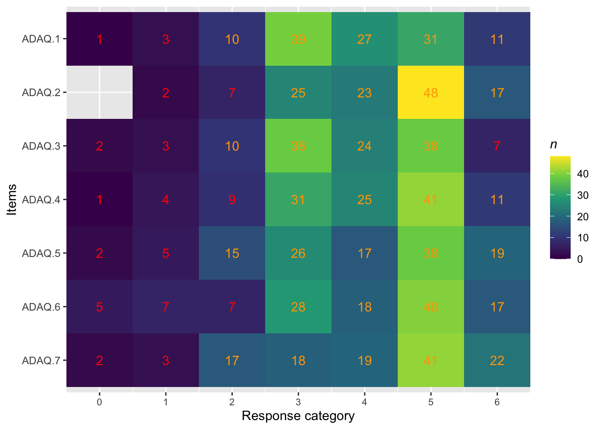
Item ADAQ.2 has no responses in scale step zero, and will therefore be merged with scale step 1.
Item ADAQ.2 has no responses in scale step zero, and will therefore be merged with scale step 1.
Code
#merging scale step zero and 1 in ADAQ.2 (creating ADAQ.2_revised)
bulls_eye_merged_superfinal_data <- bulls_eye_merged_superfinal_data %>%
mutate(ADAQ.2_revised = recode(
ADAQ.2,
`0` = 0, `1` = 0,
`2` = 1,
`3` = 2,
`4` = 3,
`5` = 4,
`6` = 5
))
#preparing data frame with ADAQ items including ADAQ.2_revised
ADAQ_data_rasch <- bulls_eye_merged_superfinal_data[, c("ADAQ.1",
"ADAQ.2_revised",
"ADAQ.3",
"ADAQ.4",
"ADAQ.5",
"ADAQ.6",
"ADAQ.7")]
#removing missing values
ADAQ_data_rasch_na_omit <- ADAQ_data_rasch %>%
select(ADAQ.1, ADAQ.2_revised, ADAQ.3, ADAQ.4, ADAQ.5, ADAQ.6, ADAQ.7) %>%
na.omit()
RImissing(ADAQ_data_rasch_na_omit)[1] "No missing data."Code
RItileplot(ADAQ_data_rasch_na_omit)
Code
#conditional likelihood ratio tests (CLR)
#a test of homogeneity that assesses whether item parameters are homogeneous across all levels of theta
clr_tests(ADAQ_data_rasch_na_omit, model = "PCM")
Conditional Likelihood Ratio Tests: clr df pvalue sig
overall 28.8 40 0.91 Code
| Item | InfitMSQ | Infit thresholds | OutfitMSQ | Outfit thresholds | Infit diff | Outfit diff | Relative location |
|---|---|---|---|---|---|---|---|
| ADAQ.1 | 1.254 | [0.82, 1.341] | 1.296 | [0.771, 1.406] | no misfit | no misfit | -1.22 |
| ADAQ.2_revised | 0.737 | [0.69, 1.183] | 0.751 | [0.716, 1.217] | no misfit | no misfit | -1.17 |
| ADAQ.3 | 0.9 | [0.799, 1.181] | 0.916 | [0.789, 1.245] | no misfit | no misfit | -0.95 |
| ADAQ.4 | 1.146 | [0.808, 1.208] | 1.231 | [0.822, 1.173] | no misfit | 0.058 | -1.27 |
| ADAQ.5 | 1.199 | [0.747, 1.178] | 1.266 | [0.749, 1.189] | 0.021 | 0.077 | -1.14 |
| ADAQ.6 | 0.745 | [0.757, 1.274] | 0.73 | [0.718, 1.299] | 0.012 | no misfit | -0.87 |
| ADAQ.7 | 0.975 | [0.839, 1.301] | 0.972 | [0.781, 1.287] | no misfit | no misfit | -1.26 |
| Note: | |||||||
|
MSQ values based on conditional calculations (n = 122 complete cases). Simulation based thresholds from 44 simulated datasets. |
Code
#conditional item characteristic curves
ICCplot(
as.data.frame(ADAQ_data_rasch_na_omit),
itemnumber = 1:4,
itemdescrip = c("ADAQ.1", "ADAQ.2", "ADAQ.3", "ADAQ.4"),
method = "cut"
)
[1] "Please press Zoom on the Plots window to see the plot"Code
ICCplot(
as.data.frame(ADAQ_data_rasch_na_omit),
itemnumber = 5:7,
itemdescrip = c("ADAQ.5", "ADAQ.6", "ADAQ.7"),
method = "cut"
)
[1] "Please press Zoom on the Plots window to see the plot"Code
#PCA of residuals (assessing unidimensionality)
RIpcmPCA(ADAQ_data_rasch_na_omit) | Eigenvalues | Proportion of variance |
|---|---|
| 1.71 | 24.9% |
| 1.39 | 21.3% |
| 1.21 | 20.3% |
| 1.01 | 12.9% |
| 0.87 | 11.3% |
Code
#item restscores
RIrestscore(ADAQ_data_rasch_na_omit)| Item | Observed value | Model expected value | Absolute difference | Adjusted p-value (BH) | Statistical significance level | Location | Relative location |
|---|---|---|---|---|---|---|---|
| ADAQ.1 | 0.56 | 0.61 | 0.05 | 0.414 | -0.10 | -1.22 | |
| ADAQ.2_revised | 0.73 | 0.61 | 0.12 | 0.048 | * | -0.05 | -1.17 |
| ADAQ.3 | 0.65 | 0.62 | 0.03 | 0.701 | 0.18 | -0.95 | |
| ADAQ.4 | 0.54 | 0.62 | 0.08 | 0.414 | -0.15 | -1.27 | |
| ADAQ.5 | 0.58 | 0.63 | 0.05 | 0.509 | -0.01 | -1.14 | |
| ADAQ.6 | 0.74 | 0.64 | 0.10 | 0.079 | . | 0.26 | -0.87 |
| ADAQ.7 | 0.65 | 0.63 | 0.02 | 0.701 | -0.14 | -1.26 |
Code
#loadings on the first residual contrast (assessing clusters in data or multidimensionality)
RIloadLoc(ADAQ_data_rasch_na_omit)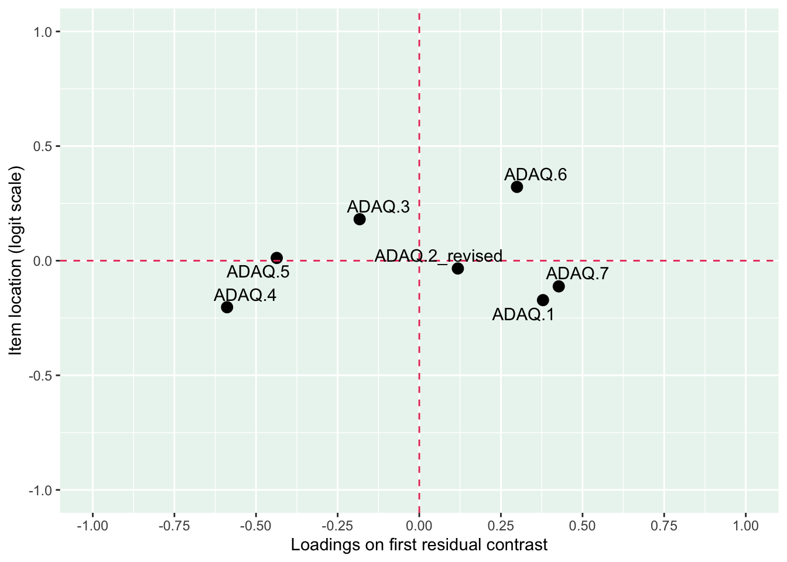
Code
#residual correlations
resid_cor_ADAQ <- RIgetResidCor(ADAQ_data_rasch_na_omit, iterations = 800, cpu = 10)
RIresidcorr(ADAQ_data_rasch_na_omit, cutoff = resid_cor_ADAQ$p99) | ADAQ.1 | ADAQ.2_revised | ADAQ.3 | ADAQ.4 | ADAQ.5 | ADAQ.6 | ADAQ.7 | |
|---|---|---|---|---|---|---|---|
| ADAQ.1 | |||||||
| ADAQ.2_revised | -0.05 | ||||||
| ADAQ.3 | -0.26 | -0.14 | |||||
| ADAQ.4 | -0.23 | -0.26 | 0.1 | ||||
| ADAQ.5 | -0.23 | 0.01 | -0.2 | -0.08 | |||
| ADAQ.6 | -0.14 | -0.08 | -0.12 | -0.31 | -0.25 | ||
| ADAQ.7 | -0.16 | -0.11 | -0.17 | -0.25 | -0.36 | 0.16 | |
| Note: | |||||||
|
Relative cut-off value is 0.195, which is 0.343 above the average correlation (-0.149). Correlations above the cut-off are highlighted in red text. |
Code
#partial gamma coefficients (assessing local independence)
clean_names <- janitor::clean_names
filter <- dplyr::filter
RIpartgamLD(ADAQ_data_rasch_na_omit) #show only significant results| Item 1 | Item 2 | Partial gamma | SE | Lower CI | Upper CI | Adjusted p-value (BH) |
|---|---|---|---|---|---|---|
| ADAQ.6 | ADAQ.7 | 0.504 | 0.136 | 0.238 | 0.77 | 0.008 |
Code
partgam_LD(as.data.frame(ADAQ_data_rasch_na_omit)) #show all output, also non-significant results Item1 Item2 gamma se pvalue padj.BH sig lower
1 ADAQ.1 ADAQ.2_revised 0.0282 0.1726 0.8703 1.0000 -0.3101
2 ADAQ.1 ADAQ.3 -0.0492 0.1709 0.7735 1.0000 -0.3840
3 ADAQ.1 ADAQ.4 -0.0417 0.1591 0.7934 1.0000 -0.3534
4 ADAQ.1 ADAQ.5 -0.0191 0.1579 0.9037 1.0000 -0.3286
5 ADAQ.1 ADAQ.6 0.0222 0.1783 0.9008 1.0000 -0.3273
6 ADAQ.1 ADAQ.7 0.1077 0.1561 0.4903 1.0000 -0.1983
7 ADAQ.2_revised ADAQ.3 -0.0377 0.2004 0.8506 1.0000 -0.4304
8 ADAQ.2_revised ADAQ.4 0.0606 0.1836 0.7414 1.0000 -0.2993
9 ADAQ.2_revised ADAQ.5 0.3566 0.1599 0.0257 1.0000 0.0433
10 ADAQ.2_revised ADAQ.6 0.1818 0.1649 0.2703 1.0000 -0.1415
11 ADAQ.2_revised ADAQ.7 0.1562 0.1735 0.3678 1.0000 -0.1838
12 ADAQ.3 ADAQ.4 0.2436 0.1711 0.1546 1.0000 -0.0918
13 ADAQ.3 ADAQ.5 -0.1408 0.1503 0.3488 1.0000 -0.4355
14 ADAQ.3 ADAQ.6 -0.0145 0.1762 0.9345 1.0000 -0.3599
15 ADAQ.3 ADAQ.7 -0.1220 0.1794 0.4967 1.0000 -0.4736
16 ADAQ.4 ADAQ.5 0.0296 0.1511 0.8447 1.0000 -0.2665
17 ADAQ.4 ADAQ.6 -0.3611 0.1513 0.0170 0.7135 -0.6576
18 ADAQ.4 ADAQ.7 -0.2687 0.1607 0.0945 1.0000 -0.5835
19 ADAQ.5 ADAQ.6 -0.1294 0.1451 0.3724 1.0000 -0.4138
20 ADAQ.5 ADAQ.7 -0.3333 0.1656 0.0441 1.0000 -0.6579
21 ADAQ.6 ADAQ.7 0.5041 0.1356 0.0002 0.0084 ** 0.2384
upper
1 0.3664
2 0.2857
3 0.2701
4 0.2904
5 0.3717
6 0.4137
7 0.3549
8 0.4205
9 0.6699
10 0.5051
11 0.4963
12 0.5790
13 0.1538
14 0.3309
15 0.2297
16 0.3257
17 -0.0646
18 0.0462
19 0.1549
20 -0.0088
21 0.7699
Item1 Item2 gamma se pvalue padj.BH sig lower
1 ADAQ.2_revised ADAQ.1 0.1241 0.1719 0.4704 1.0000 -0.2129
2 ADAQ.3 ADAQ.1 -0.0850 0.1727 0.6226 1.0000 -0.4234
3 ADAQ.3 ADAQ.2_revised -0.1163 0.1999 0.5608 1.0000 -0.5081
4 ADAQ.4 ADAQ.1 -0.0909 0.1611 0.5726 1.0000 -0.4067
5 ADAQ.4 ADAQ.2_revised -0.1586 0.1792 0.3762 1.0000 -0.5099
6 ADAQ.4 ADAQ.3 0.3691 0.1550 0.0172 0.7242 0.0653
7 ADAQ.5 ADAQ.1 0.0059 0.1527 0.9691 1.0000 -0.2934
8 ADAQ.5 ADAQ.2_revised 0.2500 0.1550 0.1067 1.0000 -0.0537
9 ADAQ.5 ADAQ.3 -0.2000 0.1542 0.1946 1.0000 -0.5022
10 ADAQ.5 ADAQ.4 0.1226 0.1559 0.4318 1.0000 -0.1831
11 ADAQ.6 ADAQ.1 0.1343 0.1662 0.4188 1.0000 -0.1913
12 ADAQ.6 ADAQ.2_revised 0.1966 0.1785 0.2708 1.0000 -0.1533
13 ADAQ.6 ADAQ.3 -0.0484 0.1940 0.8031 1.0000 -0.4287
14 ADAQ.6 ADAQ.4 -0.2667 0.1764 0.1307 1.0000 -0.6125
15 ADAQ.6 ADAQ.5 0.1765 0.1728 0.3072 1.0000 -0.1622
16 ADAQ.7 ADAQ.1 -0.0440 0.1662 0.7911 1.0000 -0.3697
17 ADAQ.7 ADAQ.2_revised -0.0769 0.1810 0.6708 1.0000 -0.4317
18 ADAQ.7 ADAQ.3 -0.1450 0.1775 0.4139 1.0000 -0.4930
19 ADAQ.7 ADAQ.4 -0.1656 0.1712 0.3335 1.0000 -0.5011
20 ADAQ.7 ADAQ.5 -0.2448 0.1613 0.1291 1.0000 -0.5608
21 ADAQ.7 ADAQ.6 0.4437 0.1470 0.0025 0.1070 0.1555
upper
1 0.4610
2 0.2534
3 0.2755
4 0.2248
5 0.1927
6 0.6729
7 0.3053
8 0.5537
9 0.1022
10 0.4282
11 0.4600
12 0.5464
13 0.3319
14 0.0792
15 0.5152
16 0.2817
17 0.2778
18 0.2029
19 0.1700
20 0.0713
21 0.7319Code
#targeting
RItargeting(ADAQ_data_rasch_na_omit)
Code
#item hierarchy
itemlabels <- data.frame(itemnr = names(ADAQ_data_rasch_na_omit), item = NA)
RIitemHierarchy(ADAQ_data_rasch_na_omit)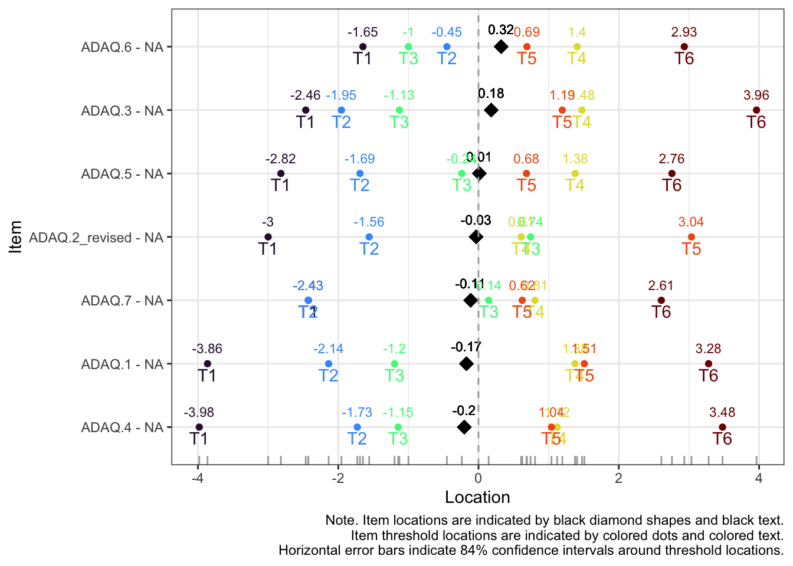
Code
#threshold locations
RIitemparams(ADAQ_data_rasch_na_omit)| Threshold 1 | Threshold 2 | Threshold 3 | Threshold 4 | Threshold 5 | Threshold 6 | Item location | |
|---|---|---|---|---|---|---|---|
| ADAQ.1 | -3.04 | -2.07 | -1.30 | 1.21 | 1.38 | 3.25 | -0.1 |
| ADAQ.2_revised | -2.62 | -1.61 | 0.56 | 0.45 | 2.97 | NA | -0.05 |
| ADAQ.3 | -2.08 | -1.94 | -1.23 | 1.30 | 1.07 | 3.94 | 0.18 |
| ADAQ.4 | -3.26 | -1.66 | -1.24 | 0.94 | 0.90 | 3.44 | -0.15 |
| ADAQ.5 | -2.44 | -1.69 | -0.39 | 1.20 | 0.54 | 2.69 | -0.01 |
| ADAQ.6 | -1.48 | -0.42 | -1.18 | 1.22 | 0.55 | 2.87 | 0.26 |
| ADAQ.7 | -2.02 | -2.42 | -0.01 | 0.61 | 0.48 | 2.53 | -0.14 |
| Note: | |||||||
| Item location is the average of the thresholds for each item. |
Code
#analysis of response categories
RIitemCats(ADAQ_data_rasch_na_omit, items = "all", xlims = c(-5, 5), legend = "left") 

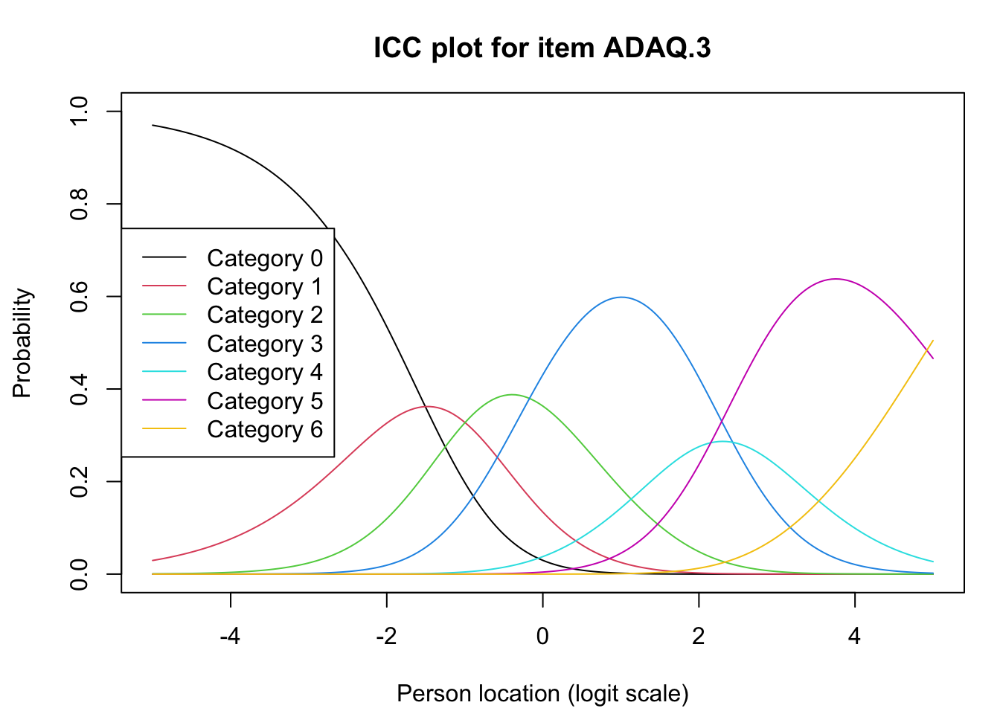
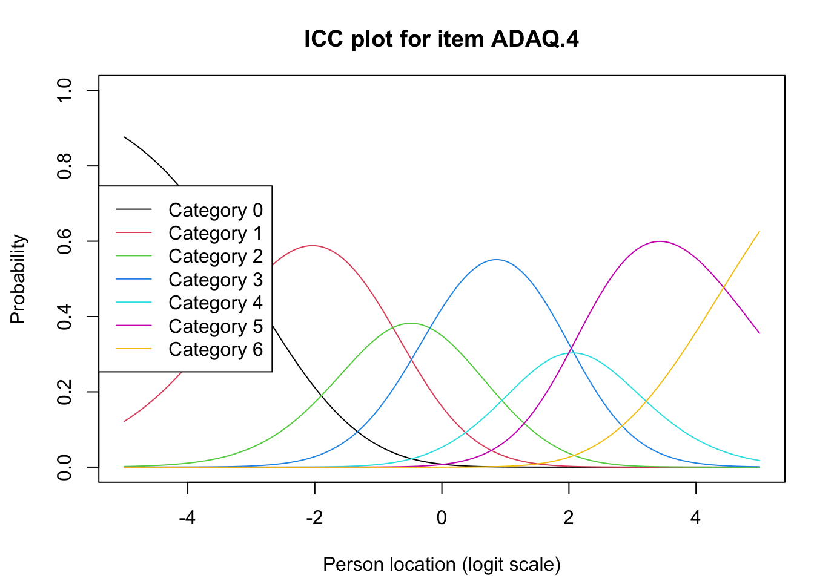
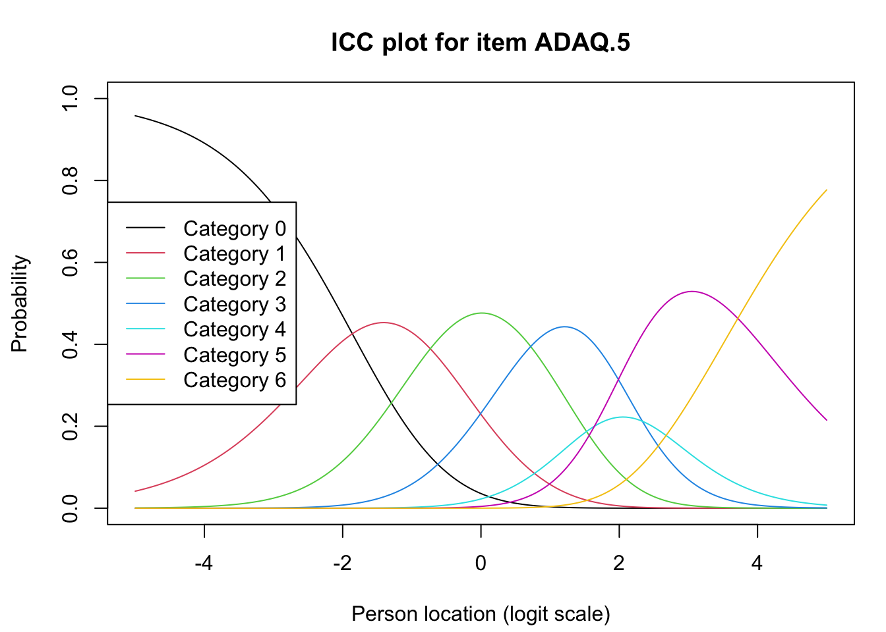
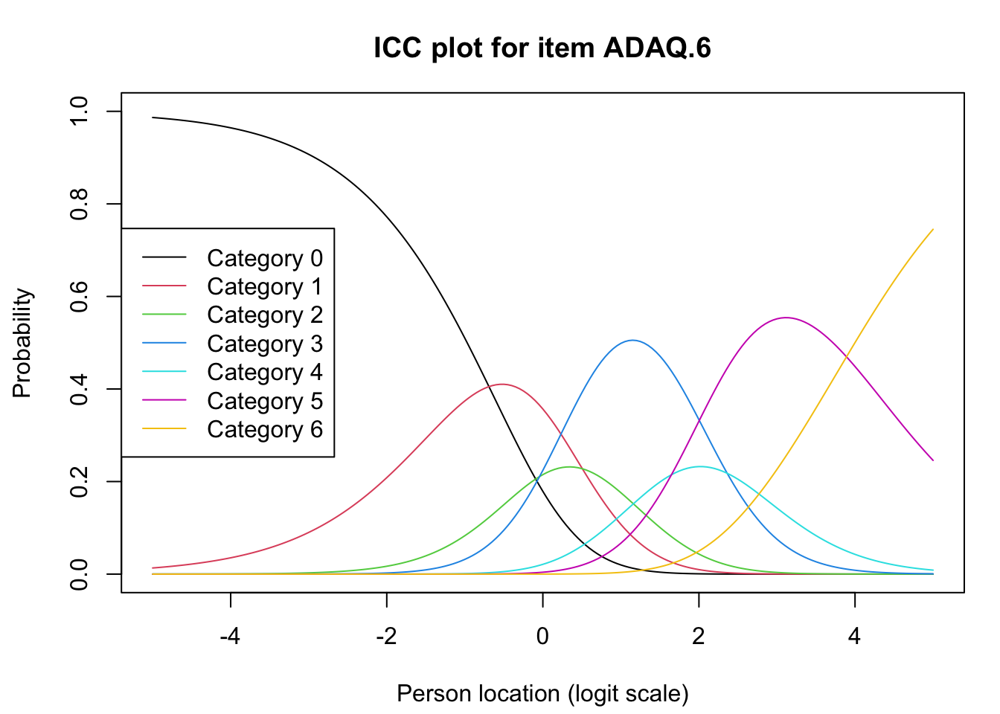
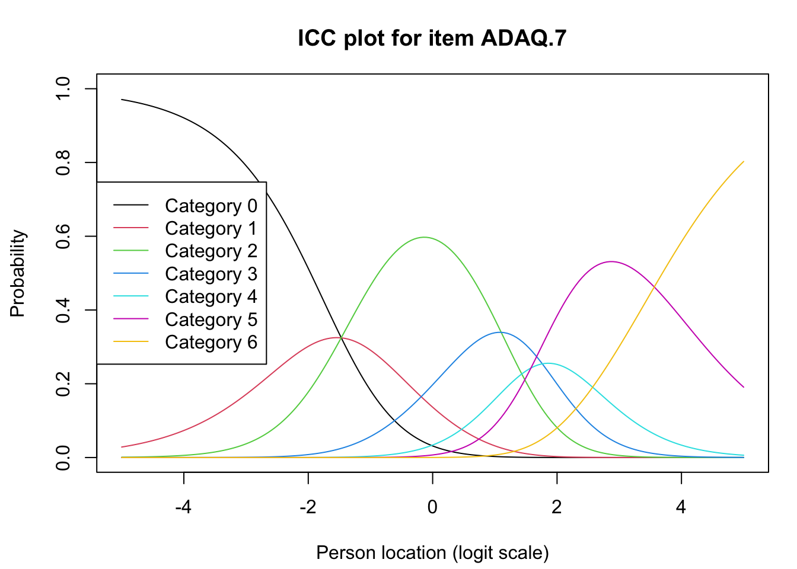
Code
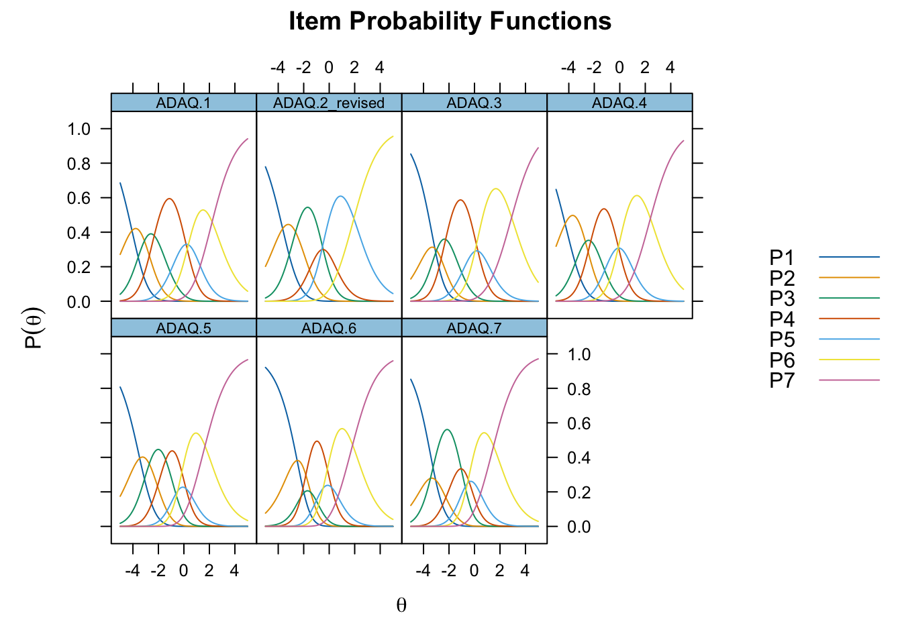
Code
#note: response categories have been analyzed using RIitemCats() function (in the easyRasch package) that estimates ICC plots using the eRm package. When there are response categories with fewer than 3 responses the easyRasch package uses estimation from the mirt package instead in the RIitemparams() and RItargeting() functions, and explain potential slight variations found in those outputs compared to the RIitemCats output. For transparency, ICC plots from the mirt package are therefore also displayed. Response category analysis was however consequently conducted using the RIitemCats() function that uses estimation from the eRm package. 3.4 Re-analysis of PFSS recoded version
Based on the analysis of the response categories and threshold locations, scale steps were merged and recoded so that each kept scale step had the highest response probability at some point on the person location scale, and also so that all threshold locations were in the right order for all items. Recoded items were given new names with the abbreviation “_recoded”.
Code
#add recoded PFSS items
bulls_eye_merged_superfinal_data <- bulls_eye_merged_superfinal_data %>%
mutate(
# Recoding ADAQ.1 (0 + 1)
ADAQ.1_recoded = recode(
ADAQ.1,
`0` = 0, `1` = 0,
`2` = 1,
`3` = 2,
`4` = 3,
`5` = 4,
`6` = 5
),
# Recoding ADAQ.2 (0 + 1 + 2; 3 + 4)
ADAQ.2_recoded = recode(
ADAQ.2,
`0` = 0, `1` = 0, `2` = 0,
`3` = 1, `4` = 1,
`5` = 2,
`6` = 3
),
# Recoding ADAQ.3 (0 + 1; 3 + 4)
ADAQ.3_recoded = recode(
ADAQ.3,
`0` = 0, `1` = 0,
`2` = 1,
`3` = 2, `4` = 2,
`5` = 3,
`6` = 4
),
# Recoding ADAQ.4 (0 + 1)
ADAQ.4_recoded = recode(
ADAQ.4,
`0` = 0, `1` = 0,
`2` = 1,
`3` = 2,
`4` = 3,
`5` = 4,
`6` = 5
),
# Recoding ADAQ.5 (0 + 1; 3 + 4)
ADAQ.5_recoded = recode(
ADAQ.5,
`0` = 0, `1` = 0,
`2` = 1,
`3` = 2, `4` = 2,
`5` = 3,
`6` = 4
),
# Recoding ADAQ.6 (#ADAQ.6: 0 + 1 + 2; 3 + 4)
ADAQ.6_recoded = recode(
ADAQ.6,
`0` = 0, `1` = 0, `2` = 0,
`3` = 1, `4` = 1,
`5` = 2,
`6` = 3
),
# Recoding ADAQ.7 (#ADAQ.7: 0 + 1, 3 + 4)
ADAQ.7_recoded = recode(
ADAQ.7,
`0` = 0, `1` = 0,
`2` = 1,
`3` = 2, `4` = 2,
`5` = 3,
`6` = 4
)
)Code
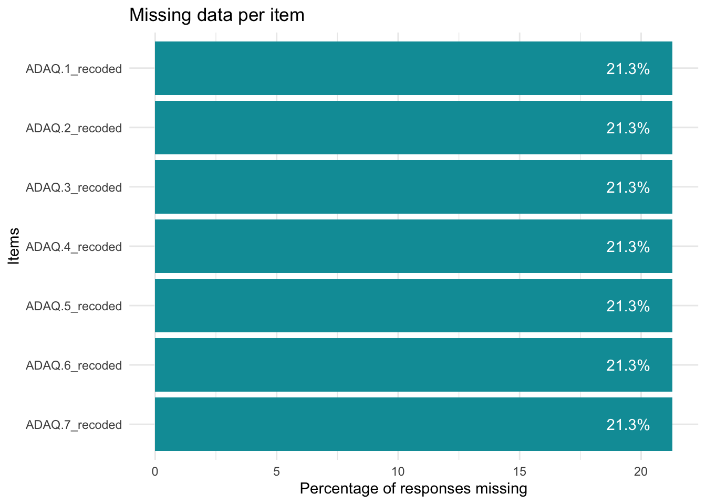
Code
#removing missing values
#in practice this means removing participants from the intervention study (Hockeystudien) that did not complete ADAQ
ADAQ_data_rasch_recoded_na_omit <- ADAQ_data_rasch_recoded %>%
select(ADAQ.1_recoded, ADAQ.2_recoded, ADAQ.3_recoded, ADAQ.4_recoded, ADAQ.5_recoded, ADAQ.6_recoded, ADAQ.7_recoded) %>%
na.omit()
RImissing(ADAQ_data_rasch_recoded_na_omit)[1] "No missing data."Code
#re-analysis of response categories using PFSS recoded
RIitemCats(ADAQ_data_rasch_recoded_na_omit, items = "all", xlims = c(-8, 8), legend = "left")
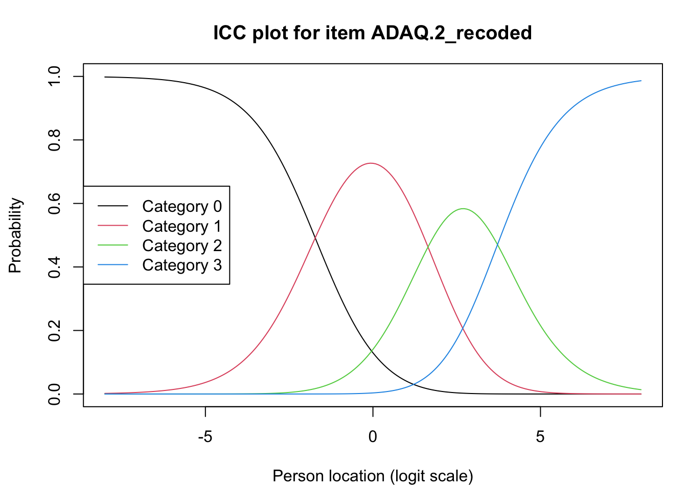
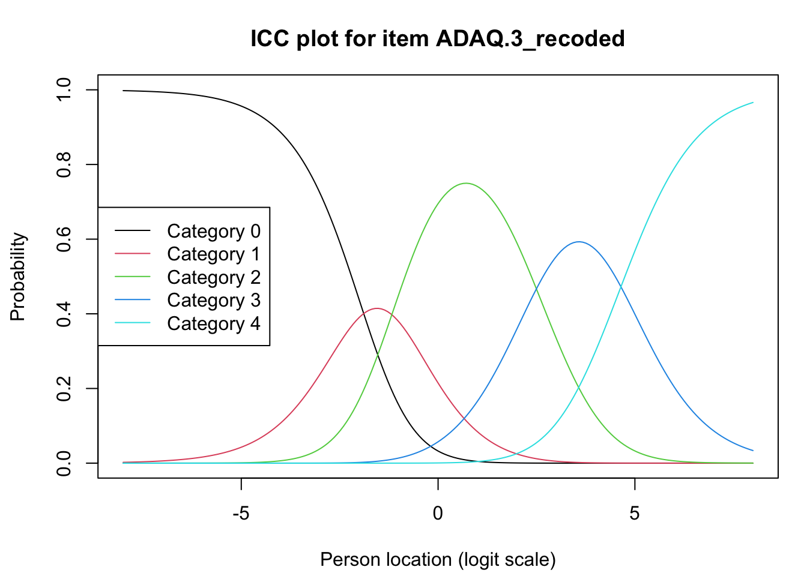
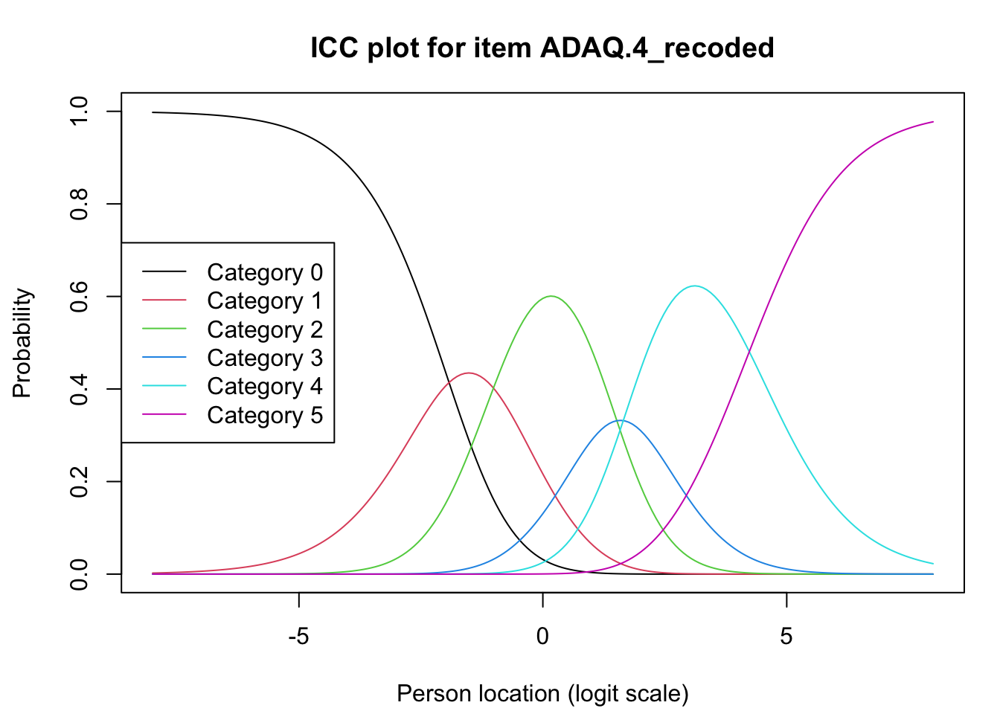
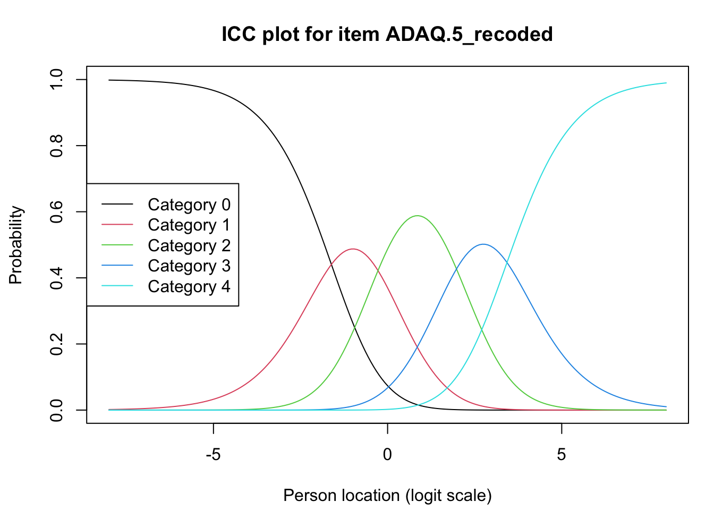
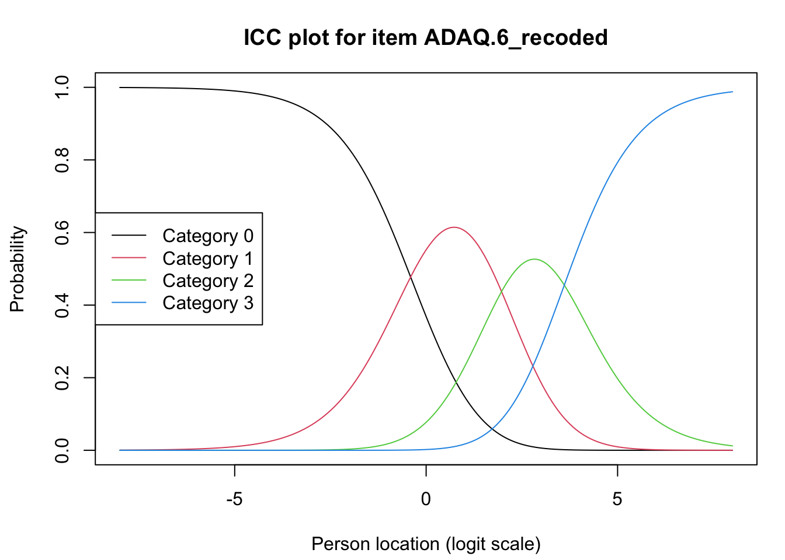
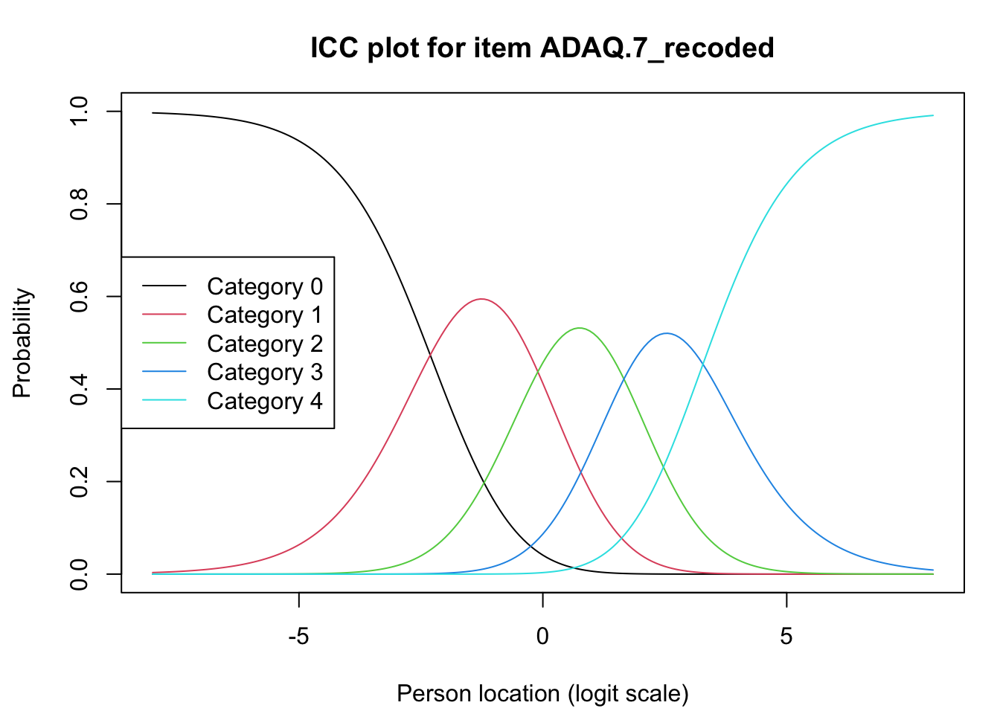
Code
#tile plot (response category frequency for the recoded items)
RItileplot(ADAQ_data_rasch_recoded_na_omit)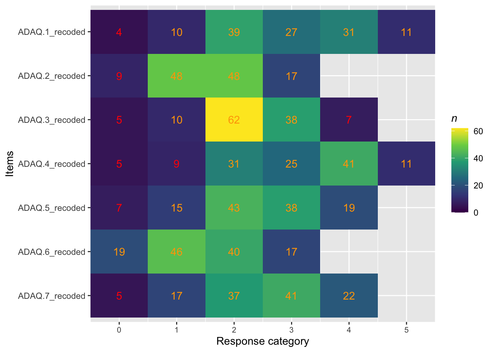
Code
#conditional likelihood ratio tests (CLR)
#a test of homogeneity that assesses whether item parameters are homogeneous across all levels of theta
clr_tests(ADAQ_data_rasch_recoded_na_omit, model = "PCM")
Conditional Likelihood Ratio Tests: clr df pvalue sig
overall 26 27 0.52 Code
| Item | InfitMSQ | Infit thresholds | OutfitMSQ | Outfit thresholds | Infit diff | Outfit diff | Relative location |
|---|---|---|---|---|---|---|---|
| ADAQ.1_recoded | 1.416 | [0.739, 1.26] | 1.478 | [0.74, 1.327] | 0.156 | 0.151 | -0.67 |
| ADAQ.2_recoded | 0.716 | [0.788, 1.213] | 0.708 | [0.767, 1.249] | 0.072 | 0.059 | -0.37 |
| ADAQ.3_recoded | 0.771 | [0.807, 1.321] | 0.741 | [0.799, 1.335] | 0.036 | 0.058 | -0.57 |
| ADAQ.4_recoded | 1.355 | [0.771, 1.248] | 1.449 | [0.768, 1.242] | 0.107 | 0.207 | -0.69 |
| ADAQ.5_recoded | 1.087 | [0.74, 1.364] | 1.107 | [0.731, 1.393] | no misfit | no misfit | -0.71 |
| ADAQ.6_recoded | 0.726 | [0.79, 1.301] | 0.693 | [0.79, 1.512] | 0.064 | 0.097 | 0.14 |
| ADAQ.7_recoded | 0.962 | [0.78, 1.287] | 0.958 | [0.753, 1.301] | no misfit | no misfit | -0.95 |
| Note: | |||||||
|
MSQ values based on conditional calculations (n = 122 complete cases). Simulation based thresholds from 99 simulated datasets. |
Code
#re-analysis of conditional item characteristic curves
ICCplot(
as.data.frame(ADAQ_data_rasch_recoded_na_omit),
itemnumber = 1:4,
itemdescrip = c(
"ADAQ.1_recoded",
"ADAQ.2_recoded",
"ADAQ.3_recoded",
"ADAQ.4_recoded"
),
method = "cut"
)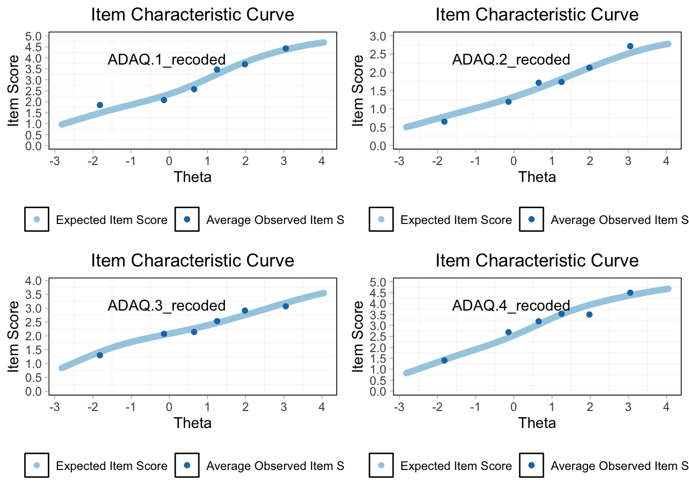
[1] "Please press Zoom on the Plots window to see the plot"Code
ICCplot(
as.data.frame(ADAQ_data_rasch_recoded_na_omit),
itemnumber = 5:7,
itemdescrip = c("ADAQ.5_recoded", "ADAQ.6_recoded", "ADAQ.7_recoded"),
method = "cut"
)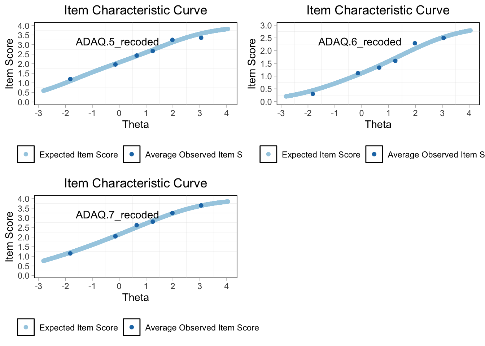
[1] "Please press Zoom on the Plots window to see the plot"Code
#re-analyzing of PCA of residuals (assessing unidimensionality)
RIpcmPCA(ADAQ_data_rasch_recoded_na_omit) | Eigenvalues | Proportion of variance |
|---|---|
| 1.66 | 26% |
| 1.40 | 23.5% |
| 1.20 | 18.7% |
| 1.10 | 13.3% |
| 0.87 | 9.7% |
Code
#re-analysis of item restscores
RIrestscore(ADAQ_data_rasch_recoded_na_omit)| Item | Observed value | Model expected value | Absolute difference | Adjusted p-value (BH) | Statistical significance level | Location | Relative location |
|---|---|---|---|---|---|---|---|
| ADAQ.1_recoded | 0.54 | 0.67 | 0.13 | 0.032 | * | -0.08 | -0.67 |
| ADAQ.2_recoded | 0.78 | 0.63 | 0.15 | 0.003 | ** | 0.21 | -0.37 |
| ADAQ.3_recoded | 0.75 | 0.64 | 0.11 | 0.033 | * | 0.02 | -0.57 |
| ADAQ.4_recoded | 0.55 | 0.67 | 0.12 | 0.090 | . | -0.11 | -0.69 |
| ADAQ.5_recoded | 0.62 | 0.65 | 0.03 | 0.623 | -0.12 | -0.71 | |
| ADAQ.6_recoded | 0.76 | 0.64 | 0.12 | 0.032 | * | 0.72 | 0.14 |
| ADAQ.7_recoded | 0.68 | 0.65 | 0.03 | 0.623 | -0.37 | -0.95 |
Code
#re-analysis of loadings on the first residual contrast (assessing clusters in data or multidimensionality)
RIloadLoc(ADAQ_data_rasch_recoded_na_omit)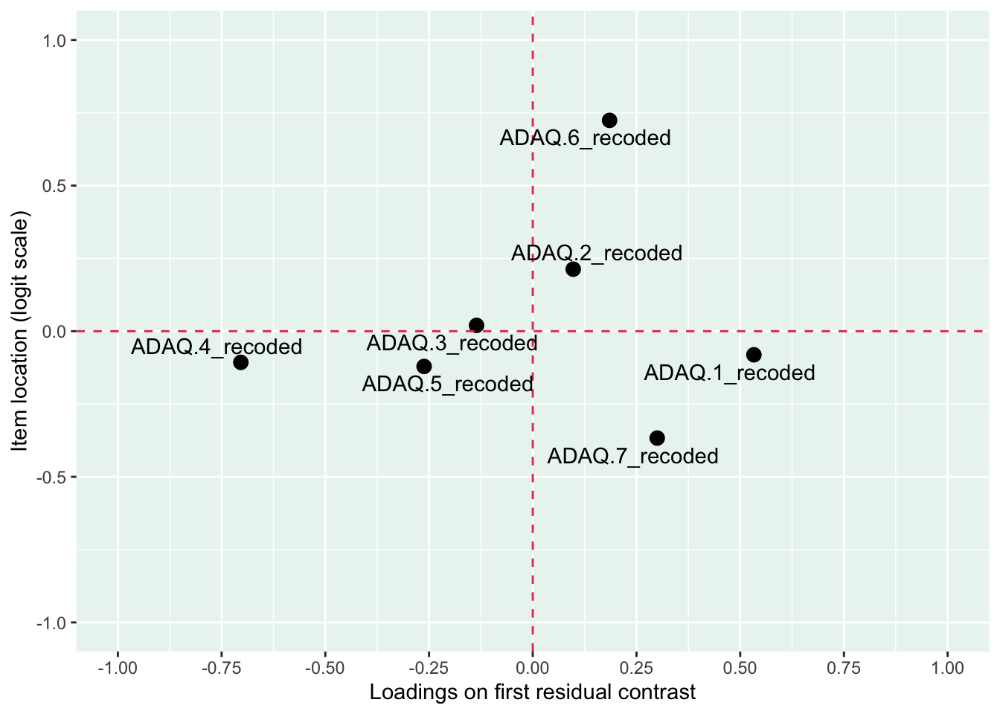
Code
#re-analysis of residual correlations
resid_cor_ADAQ_recoded <- RIgetResidCor(ADAQ_data_rasch_recoded_na_omit,
iterations = 800,
cpu = 10)
RIresidcorr(ADAQ_data_rasch_recoded_na_omit, cutoff = resid_cor_ADAQ_recoded$p99) | ADAQ.1_recoded | ADAQ.2_recoded | ADAQ.3_recoded | ADAQ.4_recoded | ADAQ.5_recoded | ADAQ.6_recoded | ADAQ.7_recoded | |
|---|---|---|---|---|---|---|---|
| ADAQ.1_recoded | |||||||
| ADAQ.2_recoded | -0.16 | ||||||
| ADAQ.3_recoded | -0.29 | 0.08 | |||||
| ADAQ.4_recoded | -0.28 | -0.27 | -0.01 | ||||
| ADAQ.5_recoded | -0.27 | -0.03 | -0.11 | -0.1 | |||
| ADAQ.6_recoded | -0.2 | 0.03 | 0 | -0.34 | -0.12 | ||
| ADAQ.7_recoded | -0.17 | -0.04 | -0.14 | -0.28 | -0.31 | 0.2 | |
| Note: | |||||||
|
Relative cut-off value is 0.179, which is 0.313 above the average correlation (-0.134). Correlations above the cut-off are highlighted in red text. |
Code
#re-analysis of partial gamma coefficients (assessing local independence)
RIpartgamLD(ADAQ_data_rasch_recoded_na_omit) #shows only significant results| Item 1 | Item 2 | Partial gamma | SE | Lower CI | Upper CI | Adjusted p-value (BH) |
|---|---|---|---|---|---|---|
| ADAQ.6_recoded | ADAQ.7_recoded | 0.54 | 0.138 | 0.269 | 0.811 | 0.004 |
Code
partgam_LD(as.data.frame(ADAQ_data_rasch_recoded_na_omit)) #shows all output, also non-significant results Item1 Item2 gamma se pvalue padj.BH sig lower
1 ADAQ.1_recoded ADAQ.2_recoded -0.0345 0.1860 0.8529 1.0000 -0.3990
2 ADAQ.1_recoded ADAQ.3_recoded -0.2952 0.1828 0.1063 1.0000 -0.6535
3 ADAQ.1_recoded ADAQ.4_recoded -0.0816 0.1491 0.5840 1.0000 -0.3739
4 ADAQ.1_recoded ADAQ.5_recoded 0.0000 0.1461 1.0000 1.0000 -0.2863
5 ADAQ.1_recoded ADAQ.6_recoded -0.0541 0.1993 0.7862 1.0000 -0.4447
6 ADAQ.1_recoded ADAQ.7_recoded 0.1011 0.1483 0.4954 1.0000 -0.1896
7 ADAQ.2_recoded ADAQ.3_recoded 0.3256 0.2527 0.1976 1.0000 -0.1696
8 ADAQ.2_recoded ADAQ.4_recoded 0.0794 0.2173 0.7150 1.0000 -0.3466
9 ADAQ.2_recoded ADAQ.5_recoded 0.3162 0.1934 0.1021 1.0000 -0.0629
10 ADAQ.2_recoded ADAQ.6_recoded 0.2778 0.2247 0.2163 1.0000 -0.1626
11 ADAQ.2_recoded ADAQ.7_recoded 0.2182 0.2095 0.2976 1.0000 -0.1923
12 ADAQ.3_recoded ADAQ.4_recoded 0.1533 0.2054 0.4555 1.0000 -0.2493
13 ADAQ.3_recoded ADAQ.5_recoded -0.0515 0.2015 0.7981 1.0000 -0.4465
14 ADAQ.3_recoded ADAQ.6_recoded -0.0309 0.2559 0.9038 1.0000 -0.5324
15 ADAQ.3_recoded ADAQ.7_recoded -0.0957 0.2121 0.6520 1.0000 -0.5113
16 ADAQ.4_recoded ADAQ.5_recoded 0.0307 0.1596 0.8476 1.0000 -0.2821
17 ADAQ.4_recoded ADAQ.6_recoded -0.3617 0.1684 0.0317 1.0000 -0.6917
18 ADAQ.4_recoded ADAQ.7_recoded -0.2067 0.1697 0.2233 1.0000 -0.5394
19 ADAQ.5_recoded ADAQ.6_recoded -0.1240 0.2048 0.5450 1.0000 -0.5254
20 ADAQ.5_recoded ADAQ.7_recoded -0.3780 0.1647 0.0217 0.9111 -0.7008
21 ADAQ.6_recoded ADAQ.7_recoded 0.5397 0.1383 0.0001 0.0040 ** 0.2686
upper
1 0.3300
2 0.0630
3 0.2106
4 0.2863
5 0.3366
6 0.3918
7 0.8208
8 0.5053
9 0.6954
10 0.7181
11 0.6287
12 0.5558
13 0.3434
14 0.4705
15 0.3200
16 0.3435
17 -0.0317
18 0.1260
19 0.2775
20 -0.0553
21 0.8107
Item1 Item2 gamma se pvalue padj.BH sig lower
1 ADAQ.2_recoded ADAQ.1_recoded 0.2319 0.1989 0.2437 1.0000 -0.1580
2 ADAQ.3_recoded ADAQ.1_recoded -0.3097 0.1877 0.0989 1.0000 -0.6776
3 ADAQ.3_recoded ADAQ.2_recoded 0.3253 0.2403 0.1758 1.0000 -0.1456
4 ADAQ.4_recoded ADAQ.1_recoded -0.1337 0.1815 0.4614 1.0000 -0.4894
5 ADAQ.4_recoded ADAQ.2_recoded -0.3200 0.1677 0.0564 1.0000 -0.6487
6 ADAQ.4_recoded ADAQ.3_recoded 0.1875 0.1931 0.3316 1.0000 -0.1910
7 ADAQ.5_recoded ADAQ.1_recoded -0.0508 0.1726 0.7682 1.0000 -0.3890
8 ADAQ.5_recoded ADAQ.2_recoded 0.1579 0.2008 0.4316 1.0000 -0.2356
9 ADAQ.5_recoded ADAQ.3_recoded -0.1376 0.2001 0.4916 1.0000 -0.5297
10 ADAQ.5_recoded ADAQ.4_recoded 0.1088 0.1509 0.4710 1.0000 -0.1870
11 ADAQ.6_recoded ADAQ.1_recoded 0.1971 0.1933 0.3080 1.0000 -0.1818
12 ADAQ.6_recoded ADAQ.2_recoded 0.2039 0.2296 0.3745 1.0000 -0.2461
13 ADAQ.6_recoded ADAQ.3_recoded -0.0787 0.2740 0.7741 1.0000 -0.6158
14 ADAQ.6_recoded ADAQ.4_recoded -0.2222 0.1873 0.2356 1.0000 -0.5894
15 ADAQ.6_recoded ADAQ.5_recoded -0.0392 0.2119 0.8532 1.0000 -0.4545
16 ADAQ.7_recoded ADAQ.1_recoded 0.1638 0.1602 0.3064 1.0000 -0.1501
17 ADAQ.7_recoded ADAQ.2_recoded 0.0492 0.2003 0.8060 1.0000 -0.3433
18 ADAQ.7_recoded ADAQ.3_recoded -0.1667 0.2121 0.4319 1.0000 -0.5823
19 ADAQ.7_recoded ADAQ.4_recoded -0.0296 0.1703 0.8621 1.0000 -0.3634
20 ADAQ.7_recoded ADAQ.5_recoded -0.2893 0.1828 0.1135 1.0000 -0.6475
21 ADAQ.7_recoded ADAQ.6_recoded 0.4468 0.1765 0.0114 0.4773 0.1008
upper
1 0.6218
2 0.0581
3 0.7962
4 0.2220
5 0.0087
6 0.5660
7 0.2873
8 0.5514
9 0.2545
10 0.4046
11 0.5760
12 0.6539
13 0.4585
14 0.1450
15 0.3760
16 0.4778
17 0.4417
18 0.2490
19 0.3042
20 0.0689
21 0.7928Code
#re-analysis of targeting
RItargeting(ADAQ_data_rasch_recoded_na_omit)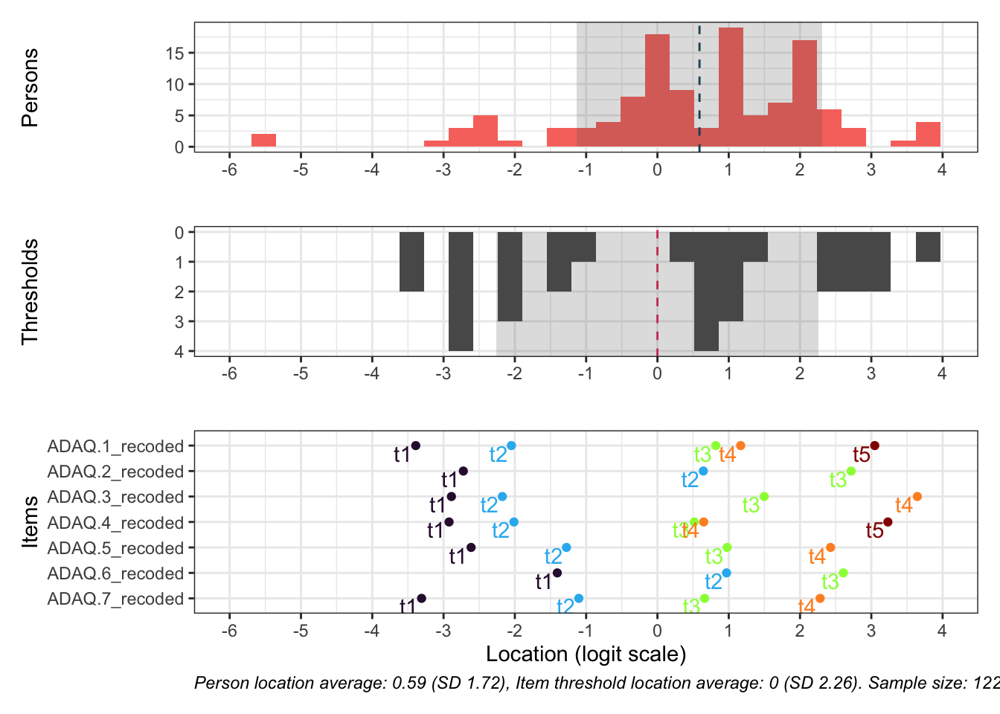
Code
#re-analysis of item hierarchy
itemlabels <- data.frame(itemnr = names(ADAQ_data_rasch_recoded_na_omit), item = NA)
RIitemHierarchy(ADAQ_data_rasch_recoded_na_omit)
Code
#threshold locations
RIitemparams(ADAQ_data_rasch_recoded_na_omit)| Threshold 1 | Threshold 2 | Threshold 3 | Threshold 4 | Threshold 5 | Item location | |
|---|---|---|---|---|---|---|
| ADAQ.1_recoded | -3.39 | -2.05 | 0.82 | 1.17 | 3.05 | -0.08 |
| ADAQ.2_recoded | -2.72 | 0.64 | 2.72 | NA | NA | 0.21 |
| ADAQ.3_recoded | -2.89 | -2.17 | 1.50 | 3.65 | NA | 0.02 |
| ADAQ.4_recoded | -2.92 | -2.01 | 0.52 | 0.65 | 3.23 | -0.11 |
| ADAQ.5_recoded | -2.61 | -1.28 | 0.98 | 2.43 | NA | -0.12 |
| ADAQ.6_recoded | -1.41 | 0.97 | 2.61 | NA | NA | 0.72 |
| ADAQ.7_recoded | -3.31 | -1.10 | 0.66 | 2.28 | NA | -0.37 |
| Note: | ||||||
| Item location is the average of the thresholds for each item. |
Removing item ADAQ.1_recoded from PFSS as it is (“most”) underfit to the model and does not work well. Items ADAQ.4_recoded (underfit), ADAQ.2_recoded (overfit), ADAQ.3_recoded (overfit) and ADAQ.6_recoded (overfit) also demonstrate problems but is kept for now in the next analysis step.
3.5 Re-analysis of PFSS recoded and trimmed version
The ADAQ.1_recoded item is dropped. A re-analysis is conducted with the recoded items but without ADAQ.1_recoded, called the PFFS recoded trimmed version.
Code
#preparing data frame for PFSS recoded and trimmed version
ADAQ_data_rasch_recoded_trimmed <- bulls_eye_merged_superfinal_data[, c(
"ADAQ.2_recoded",
"ADAQ.3_recoded",
"ADAQ.4_recoded",
"ADAQ.5_recoded",
"ADAQ.6_recoded",
"ADAQ.7_recoded"
)]
#investigating missing values
RImissing(ADAQ_data_rasch_recoded_trimmed)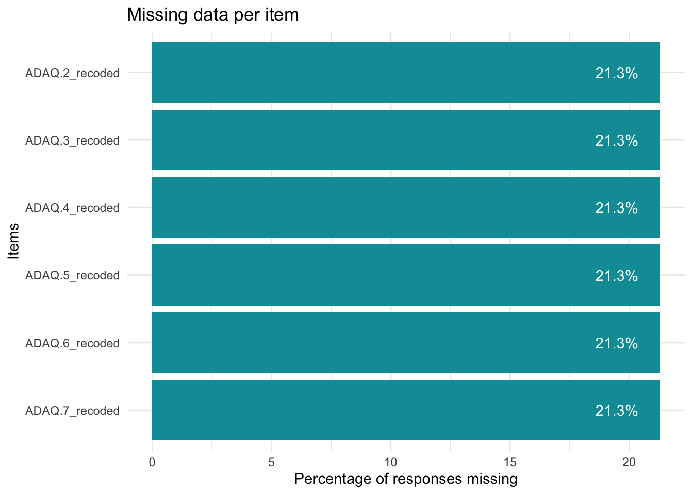
Code
#removing missing values
#in practice this means removing participants from the intervention study (Hockeystudien) that did not complete ADAQ
ADAQ_data_rasch_recoded_trimmed_na_omit <- ADAQ_data_rasch_recoded_trimmed %>%
select(ADAQ.2_recoded, ADAQ.3_recoded, ADAQ.4_recoded, ADAQ.5_recoded, ADAQ.6_recoded, ADAQ.7_recoded) %>%
na.omit()
RImissing(ADAQ_data_rasch_recoded_trimmed_na_omit)[1] "No missing data."Code
#conditional likelihood ratio tests (CLR)
#a test of homogeneity that assesses whether item parameters are homogeneous across all levels of theta
clr_tests(ADAQ_data_rasch_recoded_trimmed_na_omit, model = "PCM")
Conditional Likelihood Ratio Tests: clr df pvalue sig
overall 21 22 0.52 Code
| Item | InfitMSQ | Infit thresholds | OutfitMSQ | Outfit thresholds | Infit diff | Outfit diff | Relative location |
|---|---|---|---|---|---|---|---|
| ADAQ.2_recoded | 0.769 | [0.792, 1.231] | 0.774 | [0.74, 1.294] | 0.023 | no misfit | -0.49 |
| ADAQ.3_recoded | 0.813 | [0.766, 1.321] | 0.774 | [0.754, 1.328] | no misfit | no misfit | -0.86 |
| ADAQ.4_recoded | 1.458 | [0.757, 1.257] | 1.532 | [0.757, 1.277] | 0.201 | 0.255 | -0.93 |
| ADAQ.5_recoded | 1.182 | [0.731, 1.339] | 1.202 | [0.718, 1.342] | no misfit | no misfit | -0.90 |
| ADAQ.6_recoded | 0.782 | [0.751, 1.263] | 0.721 | [0.695, 1.415] | no misfit | no misfit | 0.18 |
| ADAQ.7_recoded | 1.076 | [0.798, 1.243] | 1.052 | [0.777, 1.262] | no misfit | no misfit | -1.17 |
| Note: | |||||||
|
MSQ values based on conditional calculations (n = 122 complete cases). Simulation based thresholds from 96 simulated datasets. |
Code
#re-analysis of conditional item characteristic curves
ICCplot(
as.data.frame(ADAQ_data_rasch_recoded_trimmed_na_omit),
itemnumber = 1:4,
itemdescrip = c(
"ADAQ.2_recoded",
"ADAQ.3_recoded",
"ADAQ.4_recoded",
"ADAQ.5_recoded"
),
method = "cut"
)
[1] "Please press Zoom on the Plots window to see the plot"Code
ICCplot(
as.data.frame(ADAQ_data_rasch_recoded_trimmed_na_omit),
itemnumber = 5:6,
itemdescrip = c("ADAQ.6_recoded", "ADAQ.7_recoded"),
method = "cut"
)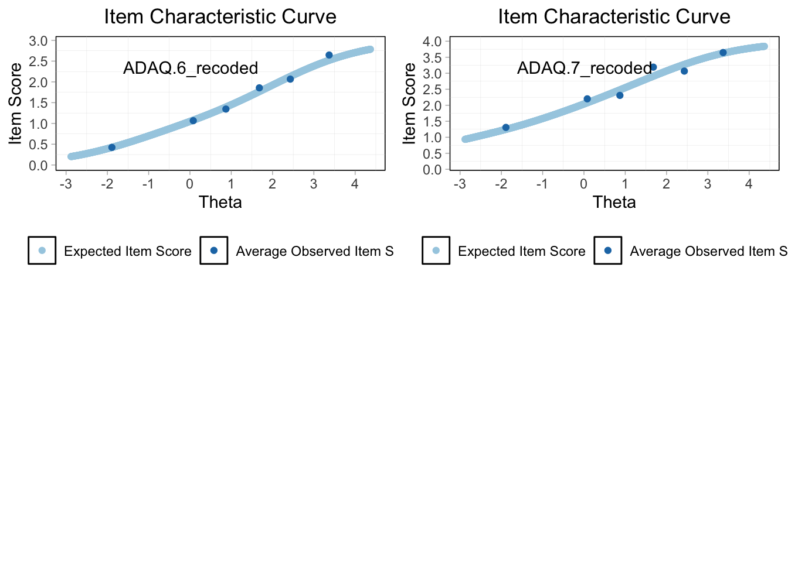
[1] "Please press Zoom on the Plots window to see the plot"Code
#re-analyzing PCA of residuals (assessing unidimensionality)
RIpcmPCA(ADAQ_data_rasch_recoded_trimmed_na_omit) | Eigenvalues | Proportion of variance |
|---|---|
| 1.73 | 32.6% |
| 1.29 | 25.2% |
| 1.22 | 17.8% |
| 0.96 | 12.9% |
| 0.79 | 11.4% |
Code
#re-analysis of item restscores
RIrestscore(ADAQ_data_rasch_recoded_trimmed_na_omit)| Item | Observed value | Model expected value | Absolute difference | Adjusted p-value (BH) | Statistical significance level | Location | Relative location |
|---|---|---|---|---|---|---|---|
| ADAQ.2_recoded | 0.77 | 0.66 | 0.11 | 0.062 | . | 0.26 | -0.49 |
| ADAQ.3_recoded | 0.78 | 0.67 | 0.11 | 0.062 | . | -0.11 | -0.86 |
| ADAQ.4_recoded | 0.56 | 0.69 | 0.13 | 0.086 | . | -0.17 | -0.93 |
| ADAQ.5_recoded | 0.64 | 0.67 | 0.03 | 0.649 | -0.15 | -0.90 | |
| ADAQ.6_recoded | 0.76 | 0.67 | 0.09 | 0.134 | 0.93 | 0.18 | |
| ADAQ.7_recoded | 0.66 | 0.67 | 0.01 | 0.888 | -0.42 | -1.17 |
Code
#re-analysis of loadings on the first residual contrast (assessing clusters in data or multidimensionality)
RIloadLoc(ADAQ_data_rasch_recoded_trimmed_na_omit)
Code
#re-analysis of residual correlations
resid_cor_ADAQ_recoded_trimmed <- RIgetResidCor(ADAQ_data_rasch_recoded_trimmed_na_omit,
iterations = 800,
cpu = 10)
RIresidcorr(ADAQ_data_rasch_recoded_trimmed_na_omit, cutoff = resid_cor_ADAQ_recoded_trimmed$p99) | ADAQ.2_recoded | ADAQ.3_recoded | ADAQ.4_recoded | ADAQ.5_recoded | ADAQ.6_recoded | ADAQ.7_recoded | |
|---|---|---|---|---|---|---|
| ADAQ.2_recoded | ||||||
| ADAQ.3_recoded | 0 | |||||
| ADAQ.4_recoded | -0.34 | -0.08 | ||||
| ADAQ.5_recoded | -0.08 | -0.2 | -0.19 | |||
| ADAQ.6_recoded | -0.01 | -0.09 | -0.43 | -0.19 | ||
| ADAQ.7_recoded | -0.08 | -0.21 | -0.35 | -0.38 | 0.16 | |
| Note: | ||||||
|
Relative cut-off value is 0.143, which is 0.308 above the average correlation (-0.165). Correlations above the cut-off are highlighted in red text. |
Code
#re-analysis of partial gamma coefficients (assessing local independence)
RIpartgamLD(ADAQ_data_rasch_recoded_trimmed_na_omit) #shows only significant results| Item 1 | Item 2 | Partial gamma | SE | Lower CI | Upper CI | Adjusted p-value (BH) |
|---|---|---|---|---|---|---|
| ADAQ.7_recoded | ADAQ.6_recoded | 0.588 | 0.146 | 0.302 | 0.874 | 0.002 |
| ADAQ.6_recoded | ADAQ.7_recoded | 0.581 | 0.125 | 0.336 | 0.825 | 0.000 |
Code
partgam_LD(as.data.frame(ADAQ_data_rasch_recoded_trimmed_na_omit)) #shows all output, also non-significant results Item1 Item2 gamma se pvalue padj.BH sig lower
1 ADAQ.2_recoded ADAQ.3_recoded 0.2143 0.2442 0.3802 1.0000 -0.2644
2 ADAQ.2_recoded ADAQ.4_recoded 0.0299 0.2051 0.8843 1.0000 -0.3721
3 ADAQ.2_recoded ADAQ.5_recoded 0.2781 0.1943 0.1523 1.0000 -0.1027
4 ADAQ.2_recoded ADAQ.6_recoded 0.0952 0.2254 0.6726 1.0000 -0.3465
5 ADAQ.2_recoded ADAQ.7_recoded 0.2704 0.2016 0.1797 1.0000 -0.1246
6 ADAQ.3_recoded ADAQ.4_recoded 0.3571 0.1951 0.0672 1.0000 -0.0253
7 ADAQ.3_recoded ADAQ.5_recoded -0.1452 0.2315 0.5306 1.0000 -0.5988
8 ADAQ.3_recoded ADAQ.6_recoded -0.0192 0.2304 0.9335 1.0000 -0.4708
9 ADAQ.3_recoded ADAQ.7_recoded -0.0270 0.2103 0.8977 1.0000 -0.4392
10 ADAQ.4_recoded ADAQ.5_recoded 0.0314 0.1755 0.8580 1.0000 -0.3126
11 ADAQ.4_recoded ADAQ.6_recoded -0.4152 0.1618 0.0103 0.3088 -0.7324
12 ADAQ.4_recoded ADAQ.7_recoded -0.3073 0.1567 0.0499 1.0000 -0.6145
13 ADAQ.5_recoded ADAQ.6_recoded -0.0476 0.1973 0.8093 1.0000 -0.4343
14 ADAQ.5_recoded ADAQ.7_recoded -0.2811 0.1771 0.1124 1.0000 -0.6282
15 ADAQ.6_recoded ADAQ.7_recoded 0.5806 0.1246 0.0000 0.0001 *** 0.3363
upper
1 0.6929
2 0.4318
3 0.6589
4 0.5370
5 0.6655
6 0.7395
7 0.3085
8 0.4324
9 0.3851
10 0.3753
11 -0.0980
12 -0.0002
13 0.3391
14 0.0660
15 0.8250
Item1 Item2 gamma se pvalue padj.BH sig lower
1 ADAQ.3_recoded ADAQ.2_recoded 0.0833 0.2405 0.7290 1.0000 -0.3881
2 ADAQ.4_recoded ADAQ.2_recoded -0.3977 0.1772 0.0248 0.7451 -0.7451
3 ADAQ.4_recoded ADAQ.3_recoded 0.0701 0.2046 0.7321 1.0000 -0.3310
4 ADAQ.5_recoded ADAQ.2_recoded 0.1243 0.1983 0.5309 1.0000 -0.2644
5 ADAQ.5_recoded ADAQ.3_recoded -0.1942 0.2143 0.3647 1.0000 -0.6143
6 ADAQ.5_recoded ADAQ.4_recoded 0.0642 0.1658 0.6984 1.0000 -0.2606
7 ADAQ.6_recoded ADAQ.2_recoded 0.3388 0.2092 0.1053 1.0000 -0.0712
8 ADAQ.6_recoded ADAQ.3_recoded -0.0654 0.2303 0.7764 1.0000 -0.5168
9 ADAQ.6_recoded ADAQ.4_recoded -0.2105 0.2232 0.3455 1.0000 -0.6479
10 ADAQ.6_recoded ADAQ.5_recoded 0.0854 0.1885 0.6506 1.0000 -0.2840
11 ADAQ.7_recoded ADAQ.2_recoded 0.2025 0.2130 0.3418 1.0000 -0.2149
12 ADAQ.7_recoded ADAQ.3_recoded -0.0897 0.2239 0.6888 1.0000 -0.5284
13 ADAQ.7_recoded ADAQ.4_recoded -0.1317 0.1738 0.4485 1.0000 -0.4723
14 ADAQ.7_recoded ADAQ.5_recoded -0.1753 0.2105 0.4051 1.0000 -0.5878
15 ADAQ.7_recoded ADAQ.6_recoded 0.5882 0.1460 0.0001 0.0017 ** 0.3022
upper
1 0.5547
2 -0.0503
3 0.4712
4 0.5129
5 0.2258
6 0.3891
7 0.7489
8 0.3860
9 0.2269
10 0.4548
11 0.6199
12 0.3491
13 0.2089
14 0.2373
15 0.8743Code
#re-analysis of targeting
RItargeting(ADAQ_data_rasch_recoded_trimmed_na_omit)
Code
#re-analysis of item hierarchy
itemlabels <- data.frame(itemnr = names(ADAQ_data_rasch_recoded_trimmed_na_omit),
item = NA)
RIitemHierarchy(ADAQ_data_rasch_recoded_trimmed_na_omit)
Code
#threshold locations
RIitemparams(ADAQ_data_rasch_recoded_trimmed_na_omit)| Threshold 1 | Threshold 2 | Threshold 3 | Threshold 4 | Threshold 5 | Item location | |
|---|---|---|---|---|---|---|
| ADAQ.2_recoded | -3.24 | 0.93 | 3.08 | NA | NA | 0.26 |
| ADAQ.3_recoded | -3.98 | -2.31 | 1.82 | 4.02 | NA | -0.11 |
| ADAQ.4_recoded | -3.98 | -2.26 | 0.80 | 0.97 | 3.6 | -0.17 |
| ADAQ.5_recoded | -3.49 | -1.18 | 1.29 | 2.79 | NA | -0.15 |
| ADAQ.6_recoded | -1.47 | 1.29 | 2.97 | NA | NA | 0.93 |
| ADAQ.7_recoded | -4.23 | -1.04 | 0.98 | 2.64 | NA | -0.42 |
| Note: | ||||||
| Item location is the average of the thresholds for each item. |
Code
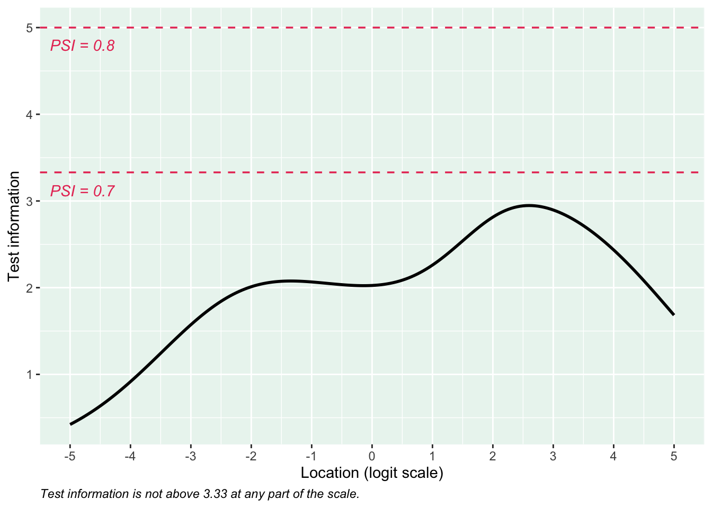
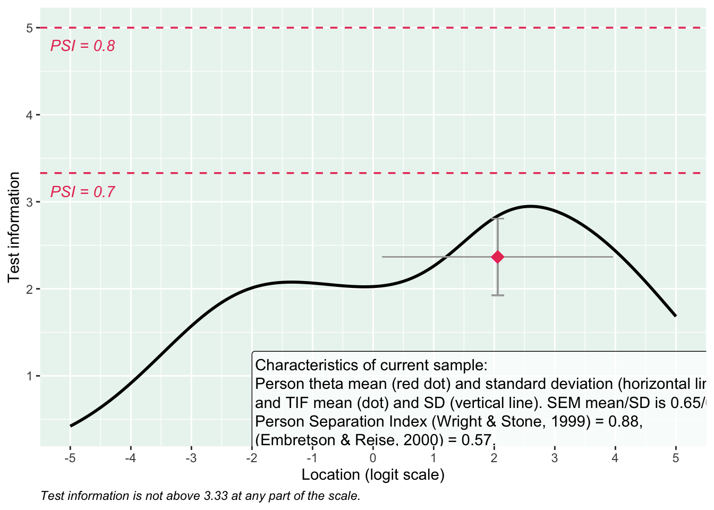
Code
#analysis of response categories
RIitemCats(ADAQ_data_rasch_recoded_trimmed_na_omit, items = "all", xlims = c(-6, 6), legend = "left") 
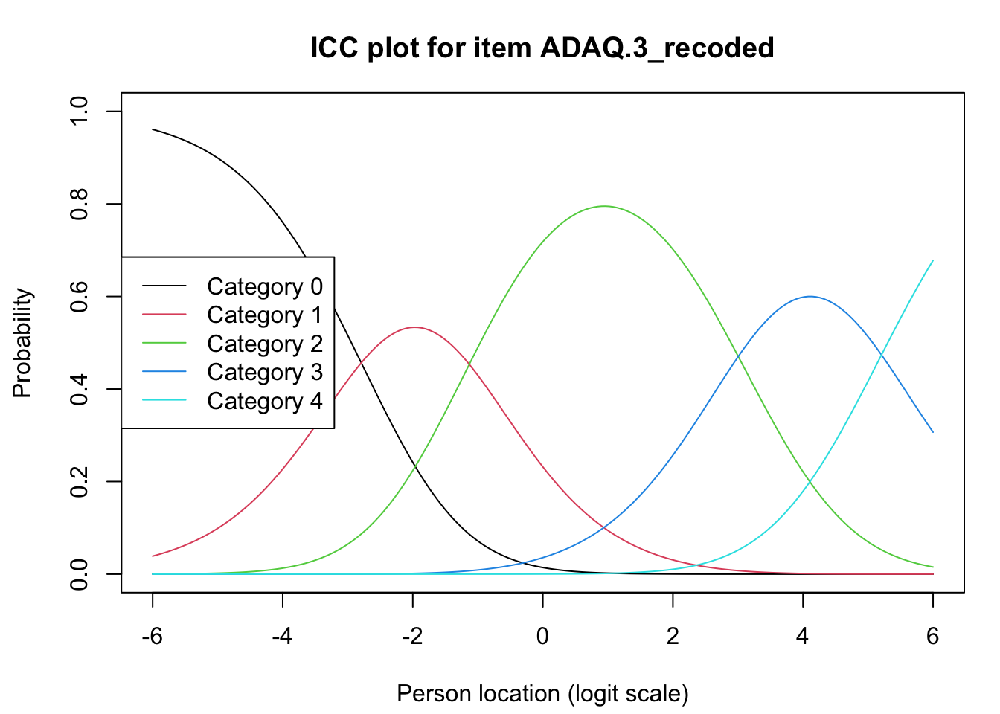
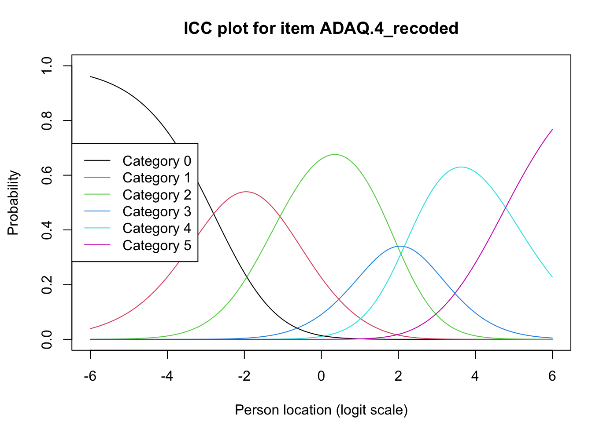
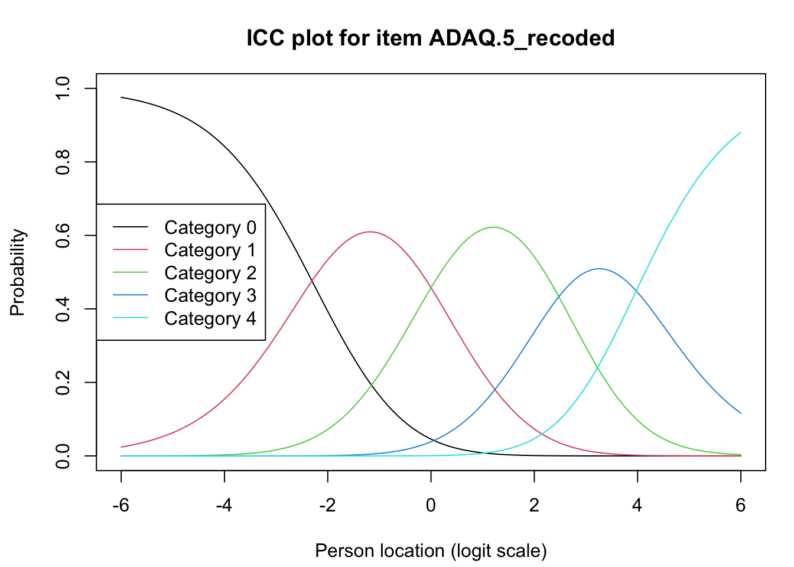
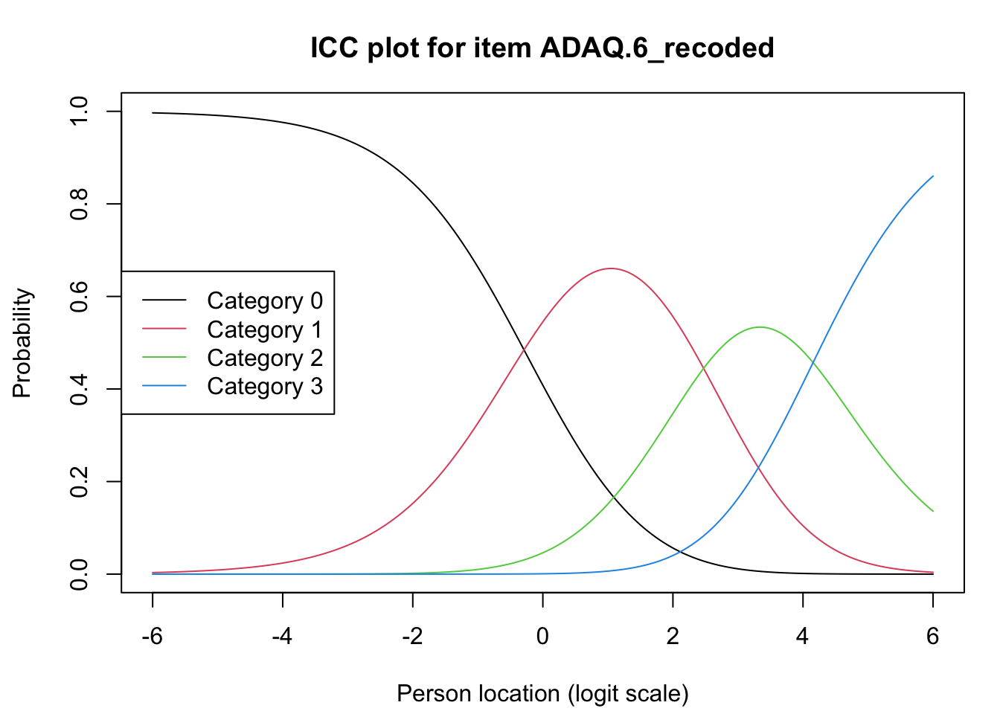
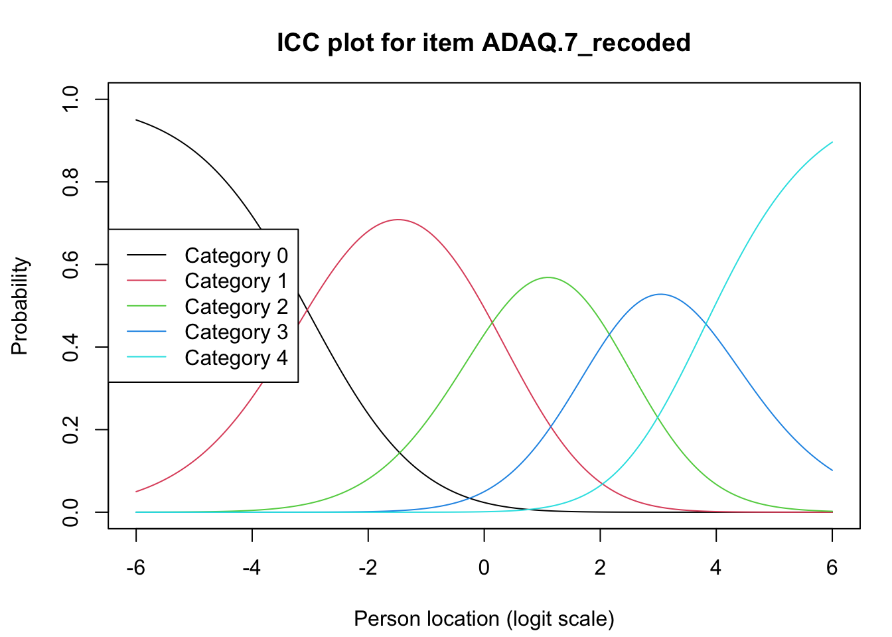
Code
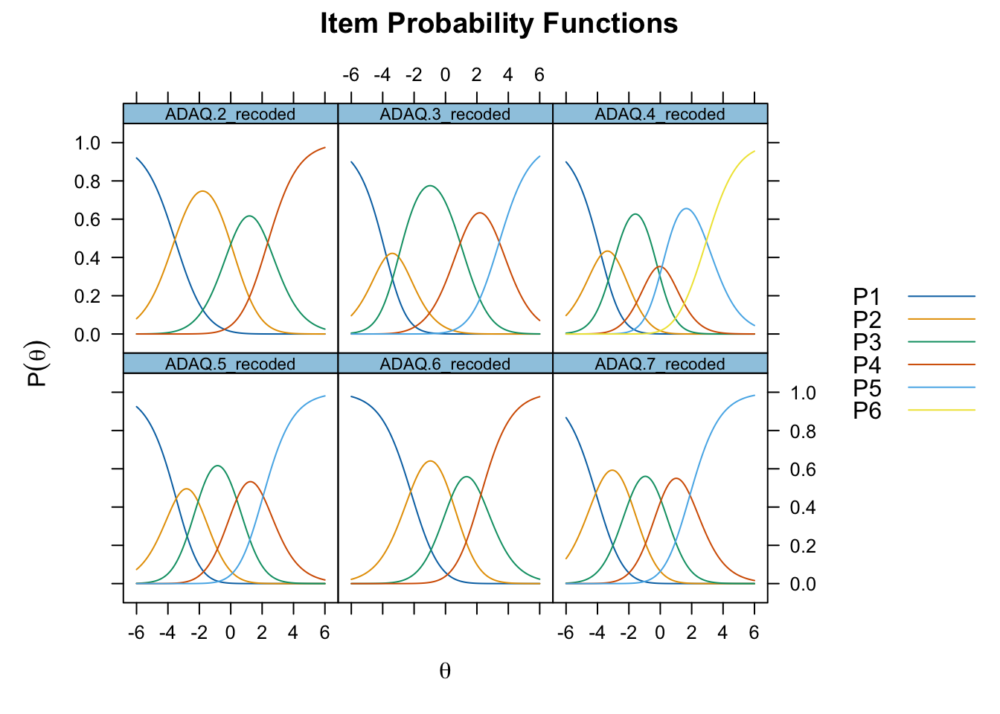
Code
#note: response categories have been analyzed using RIitemCats() function (in the easyRasch package) that estimates ICC plots using the eRm package. When there are response categories with fewer than 3 responses the easyRasch package uses estimation from the mirt package instead in the RIitemparams() and RItargeting() functions, and explain potential slight variations found in those outputs compared to the RIitemCats output. For transparency, ICC plots from the mirt package are therefore also displayed. Response category analysis was however consequently conducted using the RIitemCats() function that uses estimation from the eRm package. After removing ADAQ.1_recoded, item ADAQ.4_recoded is still underfit which may indicate it does not belong to the dimension (see conditional item fit analysis). ADAQ.2_recoded and ADAQ.6_recoded are still overfit and potentially redundant (see conditional item fit analysis). Problems with local dependence is demonstrated between items ADAQ.6_recoded and ADAQ.7_recoded (see both the residual correlation and the partgam analysis). Poor reliability is demonstrated in the TIF.
In the next step item ADAQ.4_recoded is also removed in a second “trimmed2” version analysis, as the indication of the item being underfit to the model still remains.
3.6 Re-analysis of PFSS recoded and second trimmed version
Removing both items ADAQ.1_recoded and ADAQ.4_recoded in a second “trimmed2” version.
Code
#preparing data frame for PFSS recoded and second trimmed2 version
ADAQ_data_rasch_recoded_trimmed2 <- bulls_eye_merged_superfinal_data[, c(
"ADAQ.2_recoded",
"ADAQ.3_recoded",
"ADAQ.5_recoded",
"ADAQ.6_recoded",
"ADAQ.7_recoded"
)]
#investigating missing values
RImissing(ADAQ_data_rasch_recoded_trimmed2)
Code
#removing missing values
#in practice this means removing participants from the intervention study (Hockeystudien) that did not complete ADAQ
ADAQ_data_rasch_recoded_trimmed2_na_omit <- ADAQ_data_rasch_recoded_trimmed2 %>%
select(ADAQ.2_recoded, ADAQ.3_recoded, ADAQ.5_recoded, ADAQ.6_recoded, ADAQ.7_recoded) %>%
na.omit()
RImissing(ADAQ_data_rasch_recoded_trimmed2_na_omit)[1] "No missing data."Code
#conditional likelihood ratio tests (CLR)
#a test of homogeneity that assesses whether item parameters are homogeneous across all levels of theta
clr_tests(ADAQ_data_rasch_recoded_trimmed2_na_omit, model = "PCM")
Conditional Likelihood Ratio Tests: clr df pvalue sig
overall 7.65 17 0.97 Code
| Item | InfitMSQ | Infit thresholds | OutfitMSQ | Outfit thresholds | Infit diff | Outfit diff | Relative location |
|---|---|---|---|---|---|---|---|
| ADAQ.2_recoded | 0.794 | [0.819, 1.312] | 0.77 | [0.744, 1.403] | 0.025 | no misfit | -0.51 |
| ADAQ.3_recoded | 0.98 | [0.706, 1.256] | 0.913 | [0.641, 1.344] | no misfit | no misfit | -0.83 |
| ADAQ.5_recoded | 1.375 | [0.768, 1.275] | 1.429 | [0.75, 1.303] | 0.1 | 0.126 | -0.96 |
| ADAQ.6_recoded | 0.761 | [0.76, 1.279] | 0.696 | [0.706, 1.819] | no misfit | 0.01 | 0.17 |
| ADAQ.7_recoded | 1.14 | [0.75, 1.258] | 1.113 | [0.739, 1.32] | no misfit | no misfit | -1.23 |
| Note: | |||||||
|
MSQ values based on conditional calculations (n = 122 complete cases). Simulation based thresholds from 97 simulated datasets. |
Code
#re-analysis of conditional item characteristic curves
ICCplot(
as.data.frame(ADAQ_data_rasch_recoded_trimmed2_na_omit),
itemnumber = 1:4,
itemdescrip = c(
"ADAQ.2_recoded",
"ADAQ.3_recoded",
"ADAQ.5_recoded",
"ADAQ.6_recoded"
),
method = "cut"
)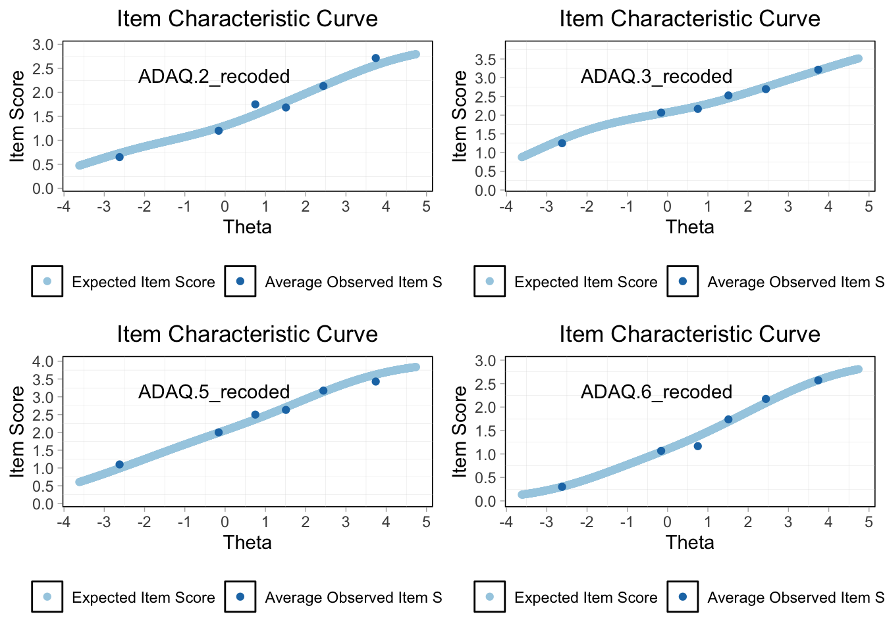
[1] "Please press Zoom on the Plots window to see the plot"Code
ICCplot(
as.data.frame(ADAQ_data_rasch_recoded_trimmed2_na_omit),
itemnumber = 5,
itemdescrip = c("ADAQ.7_recoded"),
method = "cut"
)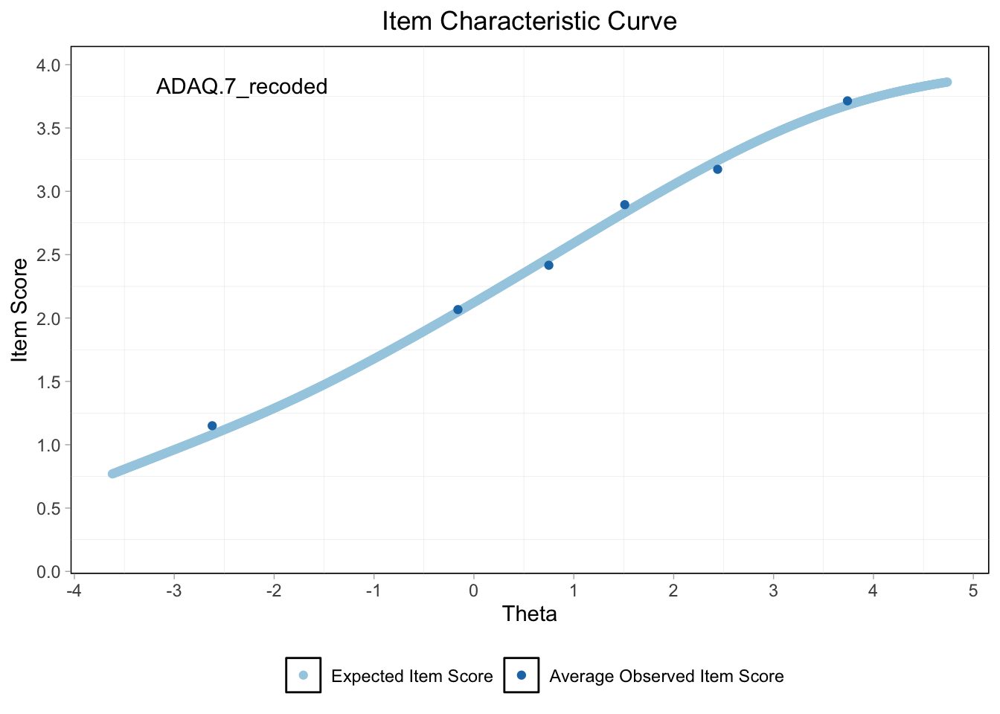
Code
#re-analyzing PCA of residuals (assessing unidimensionality)
RIpcmPCA(ADAQ_data_rasch_recoded_trimmed2_na_omit) | Eigenvalues | Proportion of variance |
|---|---|
| 1.59 | 38% |
| 1.27 | 26.1% |
| 1.11 | 18.9% |
| 1.01 | 16.7% |
| 0.01 | 0.2% |
Code
#re-analysis of item restscores
RIrestscore(ADAQ_data_rasch_recoded_trimmed2_na_omit)| Item | Observed value | Model expected value | Absolute difference | Adjusted p-value (BH) | Statistical significance level | Location | Relative location |
|---|---|---|---|---|---|---|---|
| ADAQ.2_recoded | 0.80 | 0.71 | 0.09 | 0.149 | 0.21 | -0.51 | |
| ADAQ.3_recoded | 0.75 | 0.73 | 0.02 | 0.647 | -0.10 | -0.83 | |
| ADAQ.5_recoded | 0.62 | 0.72 | 0.10 | 0.201 | -0.23 | -0.96 | |
| ADAQ.6_recoded | 0.80 | 0.72 | 0.08 | 0.149 | 0.90 | 0.17 | |
| ADAQ.7_recoded | 0.69 | 0.71 | 0.02 | 0.647 | -0.50 | -1.23 |
Code
#re-analysis of loadings on the first residual contrast (assessing clusters in data or multidimensionality)
RIloadLoc(ADAQ_data_rasch_recoded_trimmed2_na_omit)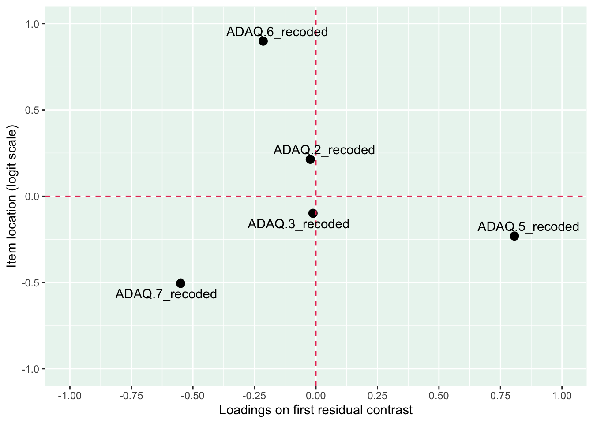
Code
#re-analysis of residual correlations
resid_cor_ADAQ_recoded_trimmed2 <- RIgetResidCor(ADAQ_data_rasch_recoded_trimmed2_na_omit,
iterations = 800,
cpu = 10)
RIresidcorr(ADAQ_data_rasch_recoded_trimmed2_na_omit, cutoff = resid_cor_ADAQ_recoded_trimmed2$p99) | ADAQ.2_recoded | ADAQ.3_recoded | ADAQ.5_recoded | ADAQ.6_recoded | ADAQ.7_recoded | |
|---|---|---|---|---|---|
| ADAQ.2_recoded | |||||
| ADAQ.3_recoded | -0.05 | ||||
| ADAQ.5_recoded | -0.17 | -0.21 | |||
| ADAQ.6_recoded | -0.18 | -0.17 | -0.32 | ||
| ADAQ.7_recoded | -0.22 | -0.27 | -0.49 | 0.02 | |
| Note: | |||||
|
Relative cut-off value is 0.106, which is 0.312 above the average correlation (-0.206). Correlations above the cut-off are highlighted in red text. |
Code
#re-analysis of partial gamma coefficients (assessing local independence)
RIpartgamLD(ADAQ_data_rasch_recoded_trimmed2_na_omit) #shows only significant results| Item 1 | Item 2 | Partial gamma | SE | Lower CI | Upper CI | Adjusted p-value (BH) |
|---|---|---|---|---|---|---|
| ADAQ.6_recoded | ADAQ.7_recoded | 0.582 | 0.143 | 0.302 | 0.862 | 0.001 |
Code
partgam_LD(as.data.frame(ADAQ_data_rasch_recoded_trimmed2_na_omit)) #shows all output, also non-significant results Item1 Item2 gamma se pvalue padj.BH sig lower
1 ADAQ.2_recoded ADAQ.3_recoded 0.4050 0.2035 0.0466 0.9315 0.0061
2 ADAQ.2_recoded ADAQ.5_recoded 0.4564 0.1595 0.0042 0.0842 . 0.1439
3 ADAQ.2_recoded ADAQ.6_recoded 0.1026 0.2459 0.6766 1.0000 -0.3794
4 ADAQ.2_recoded ADAQ.7_recoded 0.0419 0.2218 0.8501 1.0000 -0.3927
5 ADAQ.3_recoded ADAQ.5_recoded 0.0000 0.2164 1.0000 1.0000 -0.4241
6 ADAQ.3_recoded ADAQ.6_recoded -0.1429 0.2404 0.5523 1.0000 -0.6140
7 ADAQ.3_recoded ADAQ.7_recoded -0.0769 0.2303 0.7384 1.0000 -0.5283
8 ADAQ.5_recoded ADAQ.6_recoded -0.1959 0.1754 0.2640 1.0000 -0.5396
9 ADAQ.5_recoded ADAQ.7_recoded -0.4098 0.1548 0.0081 0.1624 -0.7133
10 ADAQ.6_recoded ADAQ.7_recoded 0.5821 0.1429 0.0000 0.0009 *** 0.3020
upper
1 0.8038
2 0.7690
3 0.5845
4 0.4766
5 0.4241
6 0.3283
7 0.3745
8 0.1478
9 -0.1064
10 0.8622
Item1 Item2 gamma se pvalue padj.BH sig lower
1 ADAQ.3_recoded ADAQ.2_recoded 0.1216 0.2328 0.6013 1.0000 -0.3346
2 ADAQ.5_recoded ADAQ.2_recoded 0.0798 0.2033 0.6946 1.0000 -0.3186
3 ADAQ.5_recoded ADAQ.3_recoded -0.0889 0.2020 0.6599 1.0000 -0.4847
4 ADAQ.6_recoded ADAQ.2_recoded 0.1534 0.2462 0.5332 1.0000 -0.3291
5 ADAQ.6_recoded ADAQ.3_recoded 0.0806 0.2580 0.7546 1.0000 -0.4251
6 ADAQ.6_recoded ADAQ.5_recoded -0.0227 0.2050 0.9117 1.0000 -0.4245
7 ADAQ.7_recoded ADAQ.2_recoded -0.1579 0.2077 0.4471 1.0000 -0.5649
8 ADAQ.7_recoded ADAQ.3_recoded -0.1561 0.2244 0.4868 1.0000 -0.5960
9 ADAQ.7_recoded ADAQ.5_recoded -0.3645 0.1714 0.0335 0.6702 -0.7005
10 ADAQ.7_recoded ADAQ.6_recoded 0.3269 0.2150 0.1284 1.0000 -0.0945
upper
1 0.5778
2 0.4783
3 0.3070
4 0.6358
5 0.5864
6 0.3791
7 0.2491
8 0.2838
9 -0.0285
10 0.7484Code
#re-analysis of targeting
RItargeting(ADAQ_data_rasch_recoded_trimmed2_na_omit)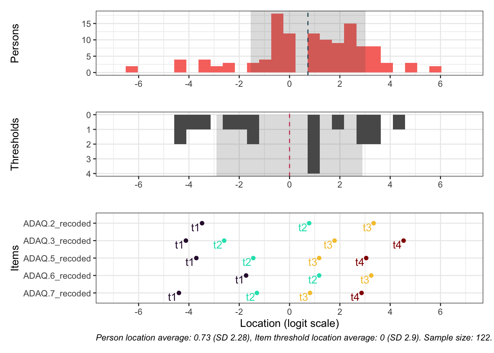
Code
#re-analysis of item hierarchy
itemlabels <- data.frame(itemnr = names(ADAQ_data_rasch_recoded_trimmed2_na_omit),
item = NA)
RIitemHierarchy(ADAQ_data_rasch_recoded_trimmed2_na_omit)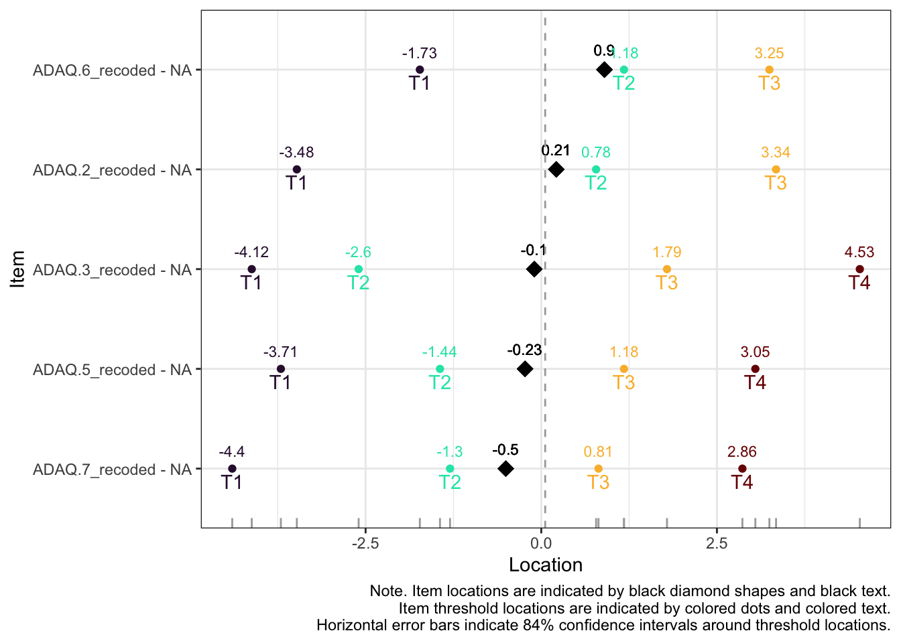
Code
#threshold locations
RIitemparams(ADAQ_data_rasch_recoded_trimmed2_na_omit)| Threshold 1 | Threshold 2 | Threshold 3 | Threshold 4 | Item location | |
|---|---|---|---|---|---|
| ADAQ.2_recoded | -3.48 | 0.78 | 3.34 | NA | 0.21 |
| ADAQ.3_recoded | -4.12 | -2.60 | 1.79 | 4.53 | -0.1 |
| ADAQ.5_recoded | -3.71 | -1.44 | 1.18 | 3.05 | -0.23 |
| ADAQ.6_recoded | -1.73 | 1.18 | 3.25 | NA | 0.9 |
| ADAQ.7_recoded | -4.40 | -1.30 | 0.81 | 2.86 | -0.5 |
| Note: | |||||
| Item location is the average of the thresholds for each item. |
Code
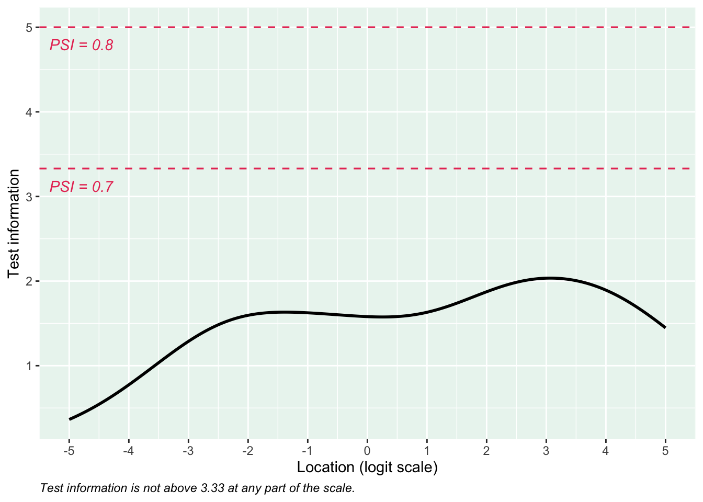
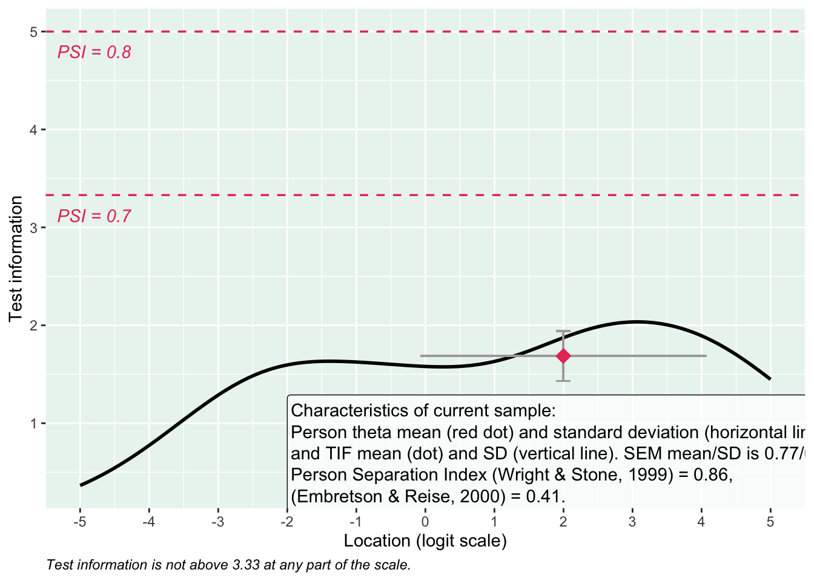
Code
#analysis of response categories
RIitemCats(ADAQ_data_rasch_recoded_trimmed2_na_omit, items = "all", xlims = c(-6, 6), legend = "left") 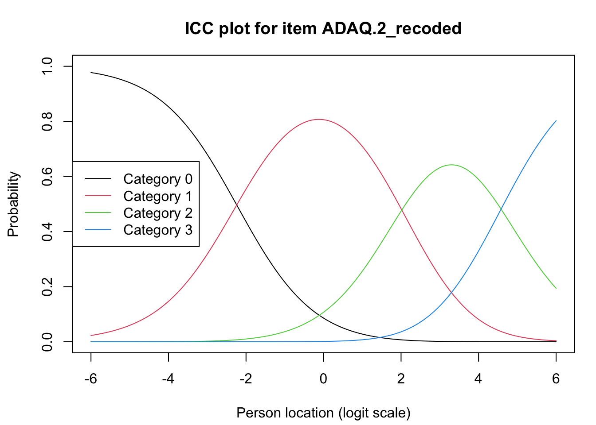
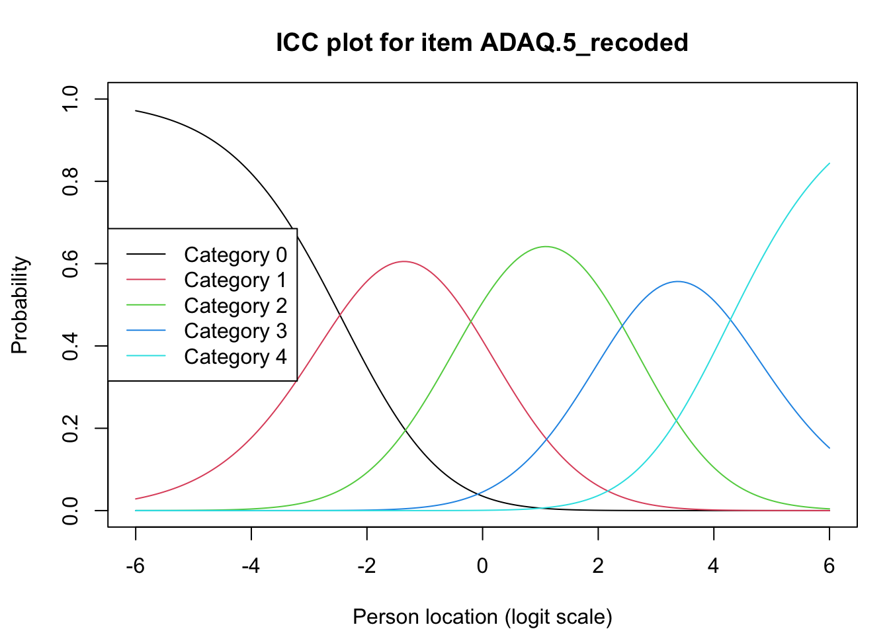
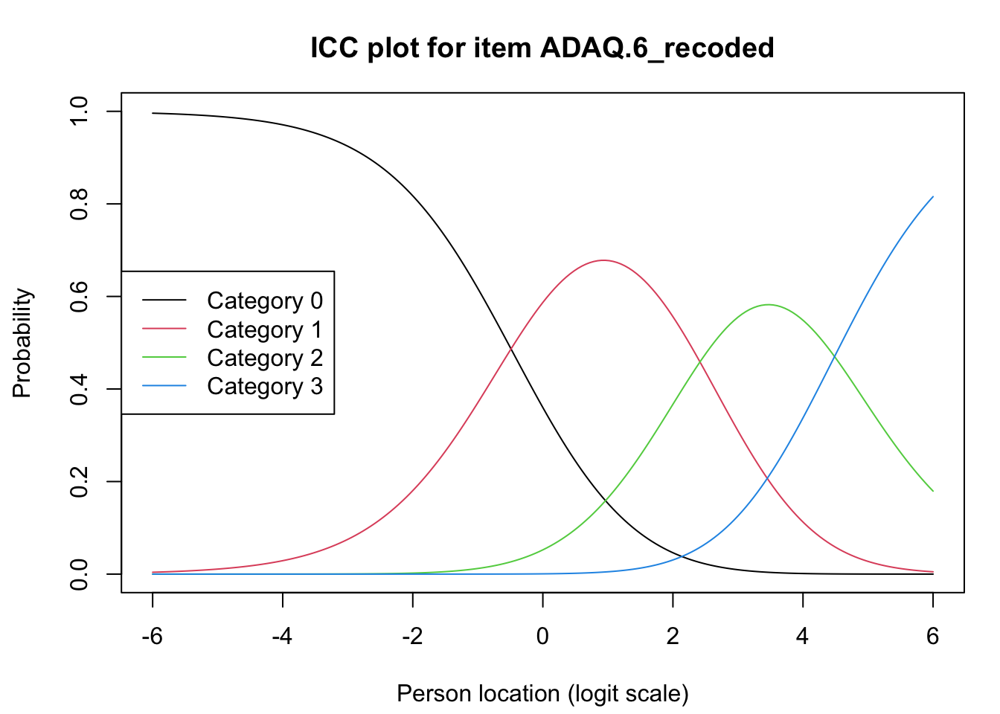
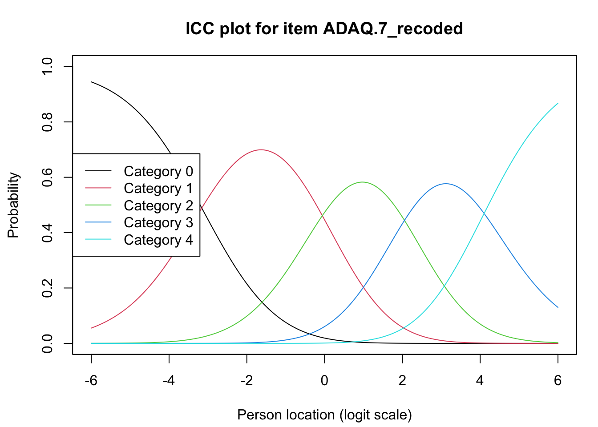
Code
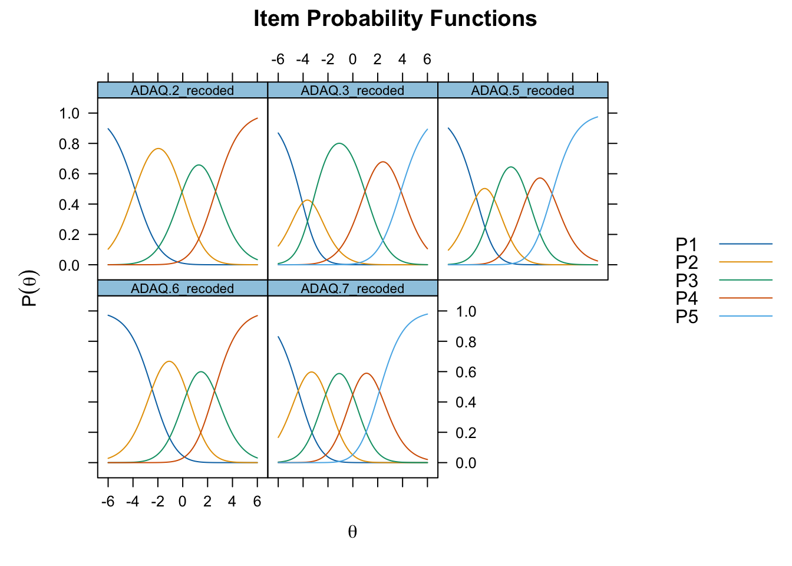
Code
#note: response categories have been analyzed using RIitemCats() function (in the easyRasch package) that estimates ICC plots using the eRm package. When there are response categories with fewer than 3 responses the easyRasch package uses estimation from the mirt package instead in the RIitemparams() and RItargeting() functions, and explain potential slight variations found in those outputs compared to the RIitemCats output. For transparency, ICC plots from the mirt package are therefore also displayed. Response category analysis was however consequently conducted using the RIitemCats() function that uses estimation from the eRm package. After removing both ADAQ.1_recoded and ADAQ.4_recoded, item ADAQ.5_recoded is underfit which may indicate it does not belong to the dimension (see conditional item fit analysis). ADAQ.6_recoded is still overfit and potentially redundant (see conditional item fit analysis). Potential problem with local dependence is only partly demonstrated between items ADAQ.6_recoded and ADAQ.7_recoded (only the partgam analysis, not the residual correlation). Poor reliability is demonstrated in the TIF.
In the next step item ADAQ.5_recoded is also removed in a third “trimmed3” version analysis, as there is indication of the item being underfit to the model.
3.7 Re-analysis of PFSS recoded and third trimmed version
Removing items ADAQ.1_recoded, ADAQ.4_recoded, and ADAQ.5_recoded in a third “trimmed3” version.
Code
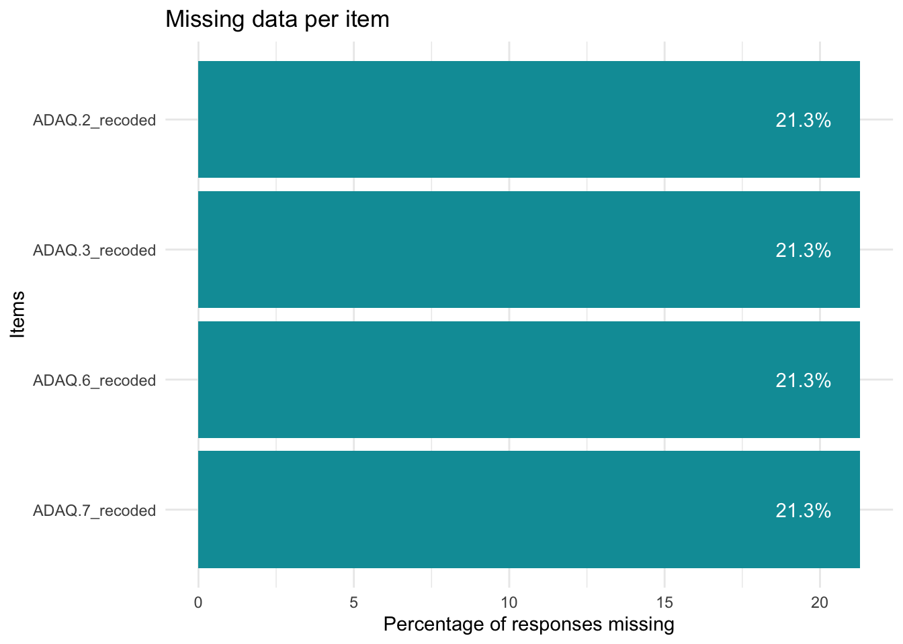
Code
#removing missing values
#in practice this means removing participants from the intervention study (Hockeystudien) that did not complete ADAQ
ADAQ_data_rasch_recoded_trimmed3_na_omit <- ADAQ_data_rasch_recoded_trimmed3 %>%
select(ADAQ.2_recoded, ADAQ.3_recoded, ADAQ.6_recoded, ADAQ.7_recoded) %>%
na.omit()
RImissing(ADAQ_data_rasch_recoded_trimmed3_na_omit)[1] "No missing data."Code
#conditional likelihood ratio tests (CLR)
#a test of homogeneity that assesses whether item parameters are homogeneous across all levels of theta
clr_tests(ADAQ_data_rasch_recoded_trimmed3_na_omit, model = "PCM")
Conditional Likelihood Ratio Tests: clr df pvalue sig
overall 6.13 13 0.94 Code
| Item | InfitMSQ | Infit thresholds | OutfitMSQ | Outfit thresholds | Infit diff | Outfit diff | Relative location |
|---|---|---|---|---|---|---|---|
| ADAQ.2_recoded | 0.945 | [0.751, 1.224] | 0.902 | [0.664, 1.334] | no misfit | no misfit | -0.61 |
| ADAQ.3_recoded | 1.126 | [0.728, 1.223] | 1.009 | [0.641, 1.394] | no misfit | no misfit | -0.90 |
| ADAQ.6_recoded | 0.845 | [0.742, 1.303] | 0.775 | [0.65, 1.469] | no misfit | no misfit | 0.16 |
| ADAQ.7_recoded | 1.112 | [0.755, 1.203] | 1.095 | [0.747, 1.248] | no misfit | no misfit | -1.40 |
| Note: | |||||||
|
MSQ values based on conditional calculations (n = 122 complete cases). Simulation based thresholds from 98 simulated datasets. |
Code
#re-analysis of conditional item characteristic curves
ICCplot(
as.data.frame(ADAQ_data_rasch_recoded_trimmed3_na_omit),
itemnumber = 1:4,
itemdescrip = c(
"ADAQ.2_recoded",
"ADAQ.3_recoded",
"ADAQ.6_recoded",
"ADAQ.7_recoded"
),
method = "cut"
)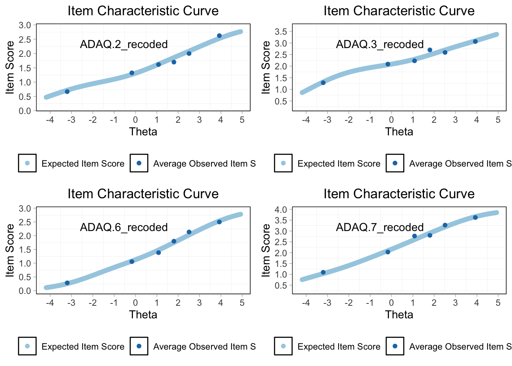
[1] "Please press Zoom on the Plots window to see the plot"Code
#re-analyzing PCA of residuals (assessing unidimensionality)
RIpcmPCA(ADAQ_data_rasch_recoded_trimmed3_na_omit) | Eigenvalues | Proportion of variance |
|---|---|
| 1.63 | 43.9% |
| 1.25 | 29.3% |
| 1.10 | 26.5% |
| 0.02 | 0.4% |
Code
#re-analysis of item restscores
RIrestscore(ADAQ_data_rasch_recoded_trimmed3_na_omit)| Item | Observed value | Model expected value | Absolute difference | Adjusted p-value (BH) | Statistical significance level | Location | Relative location |
|---|---|---|---|---|---|---|---|
| ADAQ.2_recoded | 0.76 | 0.76 | 0.00 | 0.932 | 0.15 | -0.61 | |
| ADAQ.3_recoded | 0.74 | 0.77 | 0.03 | 0.932 | -0.15 | -0.90 | |
| ADAQ.6_recoded | 0.81 | 0.76 | 0.05 | 0.911 | 0.91 | 0.16 | |
| ADAQ.7_recoded | 0.75 | 0.76 | 0.01 | 0.932 | -0.65 | -1.40 |
Code
#re-analysis of loadings on the first residual contrast (assessing clusters in data or multidimensionality)
RIloadLoc(ADAQ_data_rasch_recoded_trimmed3_na_omit)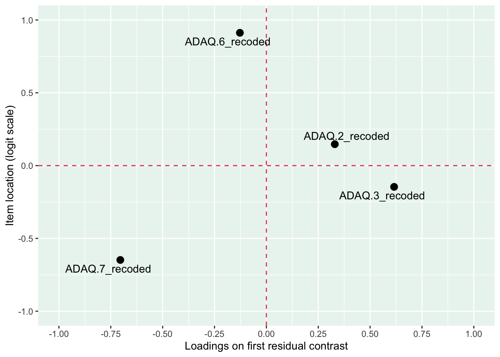
Code
#re-analysis of residual correlations
resid_cor_ADAQ_recoded_trimmed3 <- RIgetResidCor(ADAQ_data_rasch_recoded_trimmed3_na_omit,
iterations = 800,
cpu = 10)
RIresidcorr(ADAQ_data_rasch_recoded_trimmed3_na_omit, cutoff = resid_cor_ADAQ_recoded_trimmed3$p99) | ADAQ.2_recoded | ADAQ.3_recoded | ADAQ.6_recoded | ADAQ.7_recoded | |
|---|---|---|---|---|
| ADAQ.2_recoded | ||||
| ADAQ.3_recoded | -0.09 | |||
| ADAQ.6_recoded | -0.26 | -0.26 | ||
| ADAQ.7_recoded | -0.38 | -0.43 | -0.17 | |
| Note: | ||||
|
Relative cut-off value is 0.012, which is 0.278 above the average correlation (-0.266). Correlations above the cut-off are highlighted in red text. |
Code
#re-analysis of partial gamma coefficients (assessing local independence)
RIpartgamLD(ADAQ_data_rasch_recoded_trimmed3_na_omit) #shows only significant results[1] "No statistically significant local dependency found."Code
partgam_LD(as.data.frame(ADAQ_data_rasch_recoded_trimmed3_na_omit)) #shows all output, also non-significant results Item1 Item2 gamma se pvalue padj.BH sig lower
1 ADAQ.2_recoded ADAQ.3_recoded 0.3882 0.2075 0.0614 0.7368 -0.0185
2 ADAQ.2_recoded ADAQ.6_recoded -0.0171 0.2503 0.9454 1.0000 -0.5077
3 ADAQ.2_recoded ADAQ.7_recoded -0.2338 0.2097 0.2649 1.0000 -0.6447
4 ADAQ.3_recoded ADAQ.6_recoded -0.3077 0.2295 0.1800 1.0000 -0.7575
5 ADAQ.3_recoded ADAQ.7_recoded -0.3077 0.2131 0.1487 1.0000 -0.7253
6 ADAQ.6_recoded ADAQ.7_recoded 0.4070 0.1715 0.0176 0.2111 0.0710
upper
1 0.7950
2 0.4734
3 0.1772
4 0.1421
5 0.1100
6 0.7431
Item1 Item2 gamma se pvalue padj.BH sig lower
1 ADAQ.3_recoded ADAQ.2_recoded 0.3168 0.2104 0.1321 1 -0.0955
2 ADAQ.6_recoded ADAQ.2_recoded 0.0526 0.2549 0.8364 1 -0.4470
3 ADAQ.6_recoded ADAQ.3_recoded -0.0476 0.2674 0.8587 1 -0.5717
4 ADAQ.7_recoded ADAQ.2_recoded -0.3136 0.2085 0.1326 1 -0.7223
5 ADAQ.7_recoded ADAQ.3_recoded -0.3253 0.2206 0.1403 1 -0.7577
6 ADAQ.7_recoded ADAQ.6_recoded 0.2271 0.2281 0.3195 1 -0.2200
upper
1 0.7291
2 0.5523
3 0.4765
4 0.0950
5 0.1071
6 0.6741Code
#re-analysis of targeting
RItargeting(ADAQ_data_rasch_recoded_trimmed3_na_omit)Code
#re-analysis of item hierarchy
itemlabels <- data.frame(itemnr = names(ADAQ_data_rasch_recoded_trimmed3_na_omit),
item = NA)
RIitemHierarchy(ADAQ_data_rasch_recoded_trimmed3_na_omit)Code
#threshold locations
RIitemparams(ADAQ_data_rasch_recoded_trimmed3_na_omit)| Threshold 1 | Threshold 2 | Threshold 3 | Threshold 4 | Item location | |
|---|---|---|---|---|---|
| ADAQ.2_recoded | -4.05 | 0.79 | 3.70 | NA | 0.15 |
| ADAQ.3_recoded | -4.69 | -3.09 | 1.91 | 5.28 | -0.15 |
| ADAQ.6_recoded | -2.12 | 1.25 | 3.60 | NA | 0.91 |
| ADAQ.7_recoded | -4.97 | -1.64 | 0.86 | 3.15 | -0.65 |
| Note: | |||||
| Item location is the average of the thresholds for each item. |
Code
Code
#analysis of response categories
RIitemCats(ADAQ_data_rasch_recoded_trimmed3_na_omit, items = "all", xlims = c(-7, 7), legend = "left") Code
Code
#note: response categories have been analyzed using RIitemCats() function (in the easyRasch package) that estimates ICC plots using the eRm package. When there are response categories with fewer than 3 responses the easyRasch package uses estimation from the mirt package instead in the RIitemparams() and RItargeting() functions, and explain potential slight variations found in those outputs compared to the RIitemCats output. For transparency, ICC plots from the mirt package are therefore also displayed. Response category analysis was however consequently conducted using the RIitemCats() function that uses estimation from the eRm package. After removing ADAQ.1_recoded, ADAQ.4_recoded and ADAQ.5_recoded, there are no further indications of items not belonging to the dimension. ADAQ.6_recoded is not overfit to the model anymore. There is no remaining issue with local dependence between items ADAQ.6_recoded and ADAQ.7_recoded. Poor reliability is demonstrated in the TIF.
This PFSS third “trimmed3” version (with items ADAQ.2_recoded, ADAQ.3_recoded, ADAQ.6_recoded, and ADAQ.7_recoded) will be used in the validity analysis.
3.8 PFSS and BEA validity analysis
Construct validity between PFSS and BEA is investigated by correlation analysis. As both scales has undergone Rasch analysis, participants theta estimates (computed with weighted likelihood estimation - WLE) will be correlated, and since thetas are interval data Pearson’s correlation is applied.
The following data frame will be used for all validity analyses.
Code
#complete cases data frame for validity analyses
#removing missing values in relevant items for complete cases analysis
#only BE items and one item from the other scales in the bulls eye study
#is needed (in this case the SubjektivPrestation item)
#this is because there are no missing values for the other scales
#after the intervention study (Hockeystudien) participants have been removed
#therefore this data frame will work for all validity analyses
items_validity_analyses <- c(
"BE_Competition_recoded",
"BE_Training_recoded",
"BE_PreparationRecovery",
"BE_Life",
"SubjektivPrestation"
)
data_complete_cases <- bulls_eye_merged_superfinal_data[complete.cases(bulls_eye_merged_superfinal_data[, items_validity_analyses]), ]
#155 participants to begin with
#33 participants from the intervention study (Hockeystudien) were removed (did not complete any scale beside Bulls Eye)
#1 participant (not from the intervention study) who completed the other scales but not the dartboard in Bulls Eye (only other parts of BE) and were therefore removed
#results in a complete cases data frame with 121 participants
nrow(data_complete_cases)[1] 121Code
#item data frames
BE_validity_analyses <- data_complete_cases[, c(
"BE_Competition_recoded",
"BE_Training_recoded",
"BE_PreparationRecovery",
"BE_Life"
)]
ADAQ_validity_analyses <- data_complete_cases[, c(
"ADAQ.2_recoded",
"ADAQ.3_recoded",
"ADAQ.6_recoded",
"ADAQ.7_recoded"
)]
#extracting thetas
BE_thetas <- RIestThetas(BE_validity_analyses)
ADAQ_thetas <- RIestThetas(ADAQ_validity_analyses)
#adding thetas to the data frame
data_complete_cases$BE_thetas_WLE <- BE_thetas$WLE
data_complete_cases$ADAQ_thetas_WLE <- ADAQ_thetas$WLECode
correlation_BE_ADAQ <- cor_test(
data_complete_cases,
x = "BE_thetas_WLE",
y = "ADAQ_thetas_WLE",
method = "pearson"
)
print(correlation_BE_ADAQ)Parameter1 | Parameter2 | r | 95% CI | t(119) | p
------------------------------------------------------------------------
BE_thetas_WLE | ADAQ_thetas_WLE | 0.25 | [0.07, 0.41] | 2.81 | 0.006**
Observations: 121Code
plot(correlation_BE_ADAQ)Some participants did not complete BEA and PFSS during the same day as intended. Therefore, a sensitivity analysis is conducted.
Code
#time latency variables have previously been created
#using data frame from correlation calculation to account for removed NA
mean(data_complete_cases$time_latency_survey1_bulls_eye1_days,
na.rm = TRUE)[1] 0.8624139Code
sd(data_complete_cases$time_latency_survey1_bulls_eye1_days,
na.rm = TRUE)[1] 2.754702Code
range(data_complete_cases$time_latency_survey1_bulls_eye1_days,
na.rm = TRUE)[1] 0.003171296 21.032523148Code
#count participants with a time latency of more than 1 day
count_greater_than_1 <- sum(data_complete_cases$time_latency_survey1_bulls_eye1_days > 1,
na.rm = TRUE)
#count participants with a time latency of more than 3 days
count_greater_than_3 <- sum(data_complete_cases$time_latency_survey1_bulls_eye1_days > 3,
na.rm = TRUE)
print(paste("Number of participants with a time latency of more than 1 day:", count_greater_than_1))[1] "Number of participants with a time latency of more than 1 day: 17"Code
[1] "Number of participants with a time latency of more than 3 days: 11"Code
#creating data frame with only participants that completed Bulls Eye and the other scales during the same day
#since 17 participants did not, 104 participants will remain in the sensitivity analysis
data_complete_cases_less_than_1day <- subset(data_complete_cases, time_latency_survey1_bulls_eye1_days < 1)Code
#sensitivity analysis PFSS and BE
BE_validity_analyses_less1day <- data_complete_cases_less_than_1day[, c(
"BE_Competition_recoded",
"BE_Training_recoded",
"BE_PreparationRecovery",
"BE_Life"
)]
ADAQ_validity_analyses_less1day <- data_complete_cases_less_than_1day[, c(
"ADAQ.2_recoded",
"ADAQ.3_recoded",
"ADAQ.6_recoded",
"ADAQ.7_recoded"
)]
#extracting thetas
BE_thetas_less1day <- RIestThetas(BE_validity_analyses_less1day)
ADAQ_thetas_less1day <- RIestThetas(ADAQ_validity_analyses_less1day)
#adding thetas to the data frame
data_complete_cases_less_than_1day$BE_thetas_less1day_WLE <- BE_thetas_less1day$WLE
data_complete_cases_less_than_1day$ADAQ_thetas_less1day_WLE <- ADAQ_thetas_less1day$WLE
#analysis only with participants completing Bulls Eye and PFSS the same day
correlation_BE_ADAQ_less1day <- cor_test(
data_complete_cases_less_than_1day,
x = "BE_thetas_less1day_WLE",
y = "ADAQ_thetas_less1day_WLE",
method = "pearson"
)
print(correlation_BE_ADAQ_less1day)Parameter1 | Parameter2 | r | 95% CI
-----------------------------------------------------------------------
BE_thetas_less1day_WLE | ADAQ_thetas_less1day_WLE | 0.23 | [0.04, 0.40]
Parameter1 | t(102) | p
----------------------------------------
BE_thetas_less1day_WLE | 2.36 | 0.020*
Observations: 104Code
#we can also check if there is a statistically significant difference
#by adding same or different day as a predictor
data_complete_cases_sensitivity_analysis <- data_complete_cases %>%
mutate(group = factor(ifelse(time_latency_survey1_bulls_eye1_days < 1,"same_day","different_day")))
m0_adaq <- lm(ADAQ_thetas_WLE ~ BE_thetas_WLE, data = data_complete_cases_sensitivity_analysis)
m1_adaq <- lm(ADAQ_thetas_WLE ~ BE_thetas_WLE + group, data = data_complete_cases_sensitivity_analysis)
anova(m0_adaq, m1_adaq)Analysis of Variance Table
Model 1: ADAQ_thetas_WLE ~ BE_thetas_WLE
Model 2: ADAQ_thetas_WLE ~ BE_thetas_WLE + group
Res.Df RSS Df Sum of Sq F Pr(>F)
1 119 814.31
2 118 812.18 1 2.1333 0.3099 0.5788Adding whether BE and PFSS were completed during the same day or not as a predictor did not significantly alter the results.